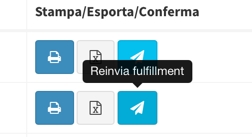
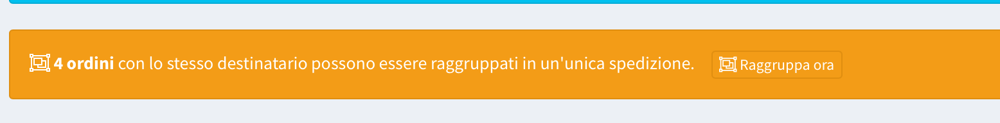
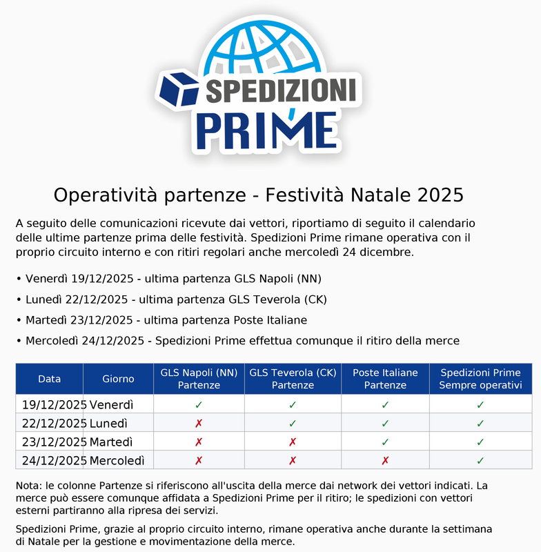
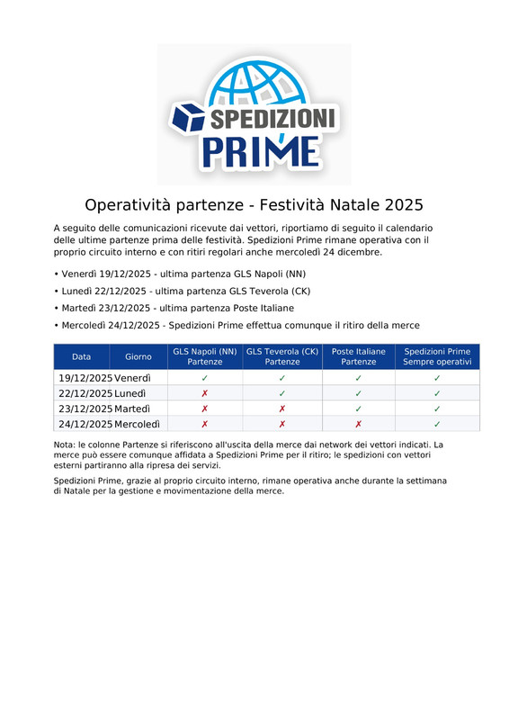

Nuovo aggiornamento 2026.30
📍 Punti di ritiro: la sede da cui partono le tue spedizioni
In Impostazioni → Punti di ritiro gestisci gli indirizzi da cui partono le tue spedizioni e presso cui vengono prenotati i ritiri. Il punto predefinito è l'indirizzo mittente usato dalla piattaforma; puoi aggiungerne altri se spedisci da più sedi.
| Novità | Cosa cambia per te |
|---|---|
| Indirizzo già pronto | Il tuo indirizzo operativo è diventato il primo punto di ritiro, predefinito e con ritiro gratuito: non devi inserire nulla. Se il punto risulta non localizzato sulla mappa, aprilo e salvalo: la posizione viene calcolata dall'indirizzo, e se il segnaposto finisce nel posto sbagliato lo trascini tu |
| Posizione sulla mappa | Ogni punto viene posizionato sulla mappa in automatico dall'indirizzo. Se il segnaposto finisce nel posto sbagliato, trascinalo tu nel punto giusto e salva: la posizione corretta resta anche se il servizio di mappe sbaglia |
| Indirizzo di reso | Per ogni punto puoi indicare un indirizzo di reso diverso da quello di partenza; se non lo indichi, i resi tornano al punto stesso |
| Riferimento mittente | Il riferimento mittente stampato sulle etichette si imposta sul punto di ritiro |
| Ritiro gratuito | Dai punti di ritiro puoi chiedere il ritiro gratuito per una sede; vedrai lo stato della richiesta e la sua approvazione nella stessa pagina |
| Profilo | Nel profilo, la sezione Punto di ritiro predefinito mostra la sede in uso e porta alla gestione dei punti |
| Spedizioni e ritiri | Se hai più punti di ritiro, nei moduli Nuova spedizione e Nuovo ritiro scegli da quale punto parte la merce: i dati del mittente e il riferimento mittente si compilano da soli, e la spedizione o il ritiro restano collegati al punto scelto |
| Ritiro gratuito applicato | I ritiri prenotati da un punto con ritiro gratuito approvato non vengono addebitati: il costo del ritiro è zero già nel preventivo del modulo e nelle API, e nessun movimento compare nel tuo credito |
| Mittente sull'etichetta | Con Poste e SDA la spedizione parte davvero dal punto scelto: indirizzo, referente e recapiti del punto vengono trasmessi al corriere. Anche le etichette stampate dalla piattaforma riportano l'indirizzo del punto da cui parte la spedizione |
| Resi | Per le spedizioni andata e ritorno Poste e SDA e per i resi BRT, l'indirizzo di reso è quello del punto di ritiro da cui è partita la spedizione |
| API | Nelle nuove API puoi indicare il punto di ritiro (il suo ID è nella pagina Punti di ritiro) quando crei spedizioni e ritiri: mittente, riferimento mittente e indirizzo di reso vengono presi dal punto, e per i ritiri l'indirizzo del mittente diventa facoltativo. Spedizioni e ritiri restituiscono il punto da cui sono partiti |
ℹ️ Il punto predefinito non si può eliminare: per rimuoverlo, imposta prima un altro punto come predefinito. Per i corrieri che non accettano un mittente diverso per ogni spedizione (segnalato nel modulo), l'etichetta riporta comunque l'indirizzo del punto predefinito.
Nuovo aggiornamento 2026.23
🔌 Nuove API per integrazioni e app
È disponibile la nuova versione delle API per collegare il tuo gestionale, il tuo e-commerce o la futura app mobile alla piattaforma: creazione spedizioni con etichetta, preventivi, tracking, chiusura giornata, ritiri, gestione giacenze, ordini e webhook.
| Novità | Cosa cambia per te |
|---|---|
| Accesso più sicuro | Le nuove API usano credenziali dedicate (App) con token temporanei, che puoi revocare in qualsiasi momento dalla nuova pagina Impostazioni → API App |
| Spedizioni internazionali | Per le destinazioni fuori dall'Unione Europea le API accettano i dati doganali completi (valore della merce, incoterm, elenco articoli con codice HS, quantità, valore e paese di origine) e li trasmettono al corriere. Anche per le spedizioni create dal sito o dagli ordini dei tuoi negozi la dichiarazione doganale viene compilata in automatico dalle righe ordine e dal tuo catalogo prodotti: completa descrizione doganale, codice HS e paese di origine dei prodotti per dichiarazioni precise |
| Dati coerenti | Indirizzi, pesi, misure e importi hanno una struttura unica e chiara; gli errori sono descritti in modo preciso per facilitare l'integrazione |
| Tutto il tuo account via API | Oltre alle spedizioni, dalle API puoi consultare e gestire rubrica destinatari, catalogo prodotti e imballi, e leggere fatture (con PDF), saldo e movimenti del credito, distinte contrassegni, distinte resi, ritiri e sedi |
| Webhook via API | Puoi registrare, testare e consultare gli invii dei tuoi webhook direttamente dalle API |
| Webhook più affidabili | Gli avvisi verso i tuoi sistemi vengono ora inviati in coda con nuovi tentativi automatici in caso di errore, rispettano gli eventi scelti alla registrazione e coprono anche la creazione della spedizione e l'apertura/chiusura delle giacenze |
💡 Le API attuali con chiave API restano attive fino al 28 febbraio 2027: nessuna modifica è richiesta subito alle integrazioni esistenti, ma vanno migrate alla nuova versione entro quella data (ogni risposta delle API precedenti lo segnala negli header). Le nuove integrazioni devono usare la nuova versione. La documentazione è pubblicata su apidocs.spedisci.online.
Nuovo aggiornamento 2026.22.1
✅ Stato "Consegnato" anche per WooCommerce e BigCommerce
Lo stato Consegnato che già inviamo a Shopify, Magento 2, PrestaShop, Storeden ed Ecwid ora raggiunge anche i negozi WooCommerce e BigCommerce: quando il corriere segna la spedizione come consegnata, aggiorniamo automaticamente l'ordine sul tuo store.
| Piattaforma | Stato impostato | Cosa serve nel tuo negozio |
|---|---|---|
| WooCommerce | Stato "Consegnato/Delivered" se presente, altrimenti "Completato" | Facoltativo: un plugin che aggiunga uno stato ordine il cui nome contenga "Delivered", "Consegnato" o "Consegnata" — lo rileviamo e lo usiamo automaticamente. Senza plugin l'ordine resta su "Completato" |
| BigCommerce | Stato di sistema "Completed" | Nulla da configurare: serve solo che il token API collegato abbia il permesso di modifica ordini (lo stesso usato per l'importazione) |
💡 WooCommerce: alla chiusura della distinta l'ordine viene già portato su "Completato". Il nuovo stato di consegna diventa quindi davvero visibile se nel negozio esiste uno stato dedicato "Consegnato/Delivered".
DISATTIVAZIONE ASSISTENZA CRM
Gentile Cliente,
abbiamo disattivato il Portale CRM e ripristinato l’assistenza tramite Telegram per tutti gli utenti, anche in vista delle nuove integrazioni basate sull’intelligenza artificiale.
Chi non utilizza più Telegram è invitato a scaricarlo nuovamente e a contattarci attraverso il canale corretto:
Assistenza Operativa
https://t.me/operativospedizioniprime
Amministrazione
https://t.me/amministrazionespedizioniprime
Contrassegni
https://t.me/contrassegnispedizioniprime
Giacenze
https://t.me/giacenzespedizioniprime
Invitiamo inoltre chi utilizza già Telegram a suggerirci nuove funzioni o miglioramenti relativi all’assistenza, inviando una descrizione dettagliata a:
ufficiotecnicospedizioniprime@gmail.com
Non potendo apportare modifiche strutturali importanti al portale di spedizione, vi chiediamo di limitare le proposte alle modalità di assistenza e comunicazione con i nostri uffici.
Grazie per la collaborazione.
Spedizioni Prime
Nuovo aggiornamento 2026.22
📊 Dashboard rinnovata
La tua Dashboard è stata ridisegnata per mostrarti subito i dati che contano:
- I quattro numeri chiave in cima alla pagina: spedizioni, consegne, giacenze e resi degli ultimi 30 giorni
- Mappa delle destinazioni: vedi su una mappa d'Italia dove stai spedendo, con il dettaglio per zona di consegna
- Cash flow dell'intero mese e andamento mensile riunito in un unico grafico
- La card App Autista con i link diretti agli store iOS e Android
🔍 Filtri più intelligenti su tutte le pagine
Tutte le pagine con elenchi (ordini, spedizioni, giacenze, contrassegni, distinte...) ora usano la stessa barra filtri:
- I filtri si ricordano da soli: quando torni su una pagina ritrovi le impostazioni che avevi lasciato
- Evidenziazione dei filtri attivi: vedi a colpo d'occhio quali filtri stanno restringendo l'elenco
- Stato ambra quando hai modificato un filtro ma non l'hai ancora applicato
- Il pulsante Reset riporta sempre la pagina allo stato iniziale
- Selettore date uniforme, con l'anno sempre visibile
✅ Stato "Consegnato" inviato al tuo store
Fino ad oggi, alla chiusura della distinta il tuo negozio riceveva la conferma di spedizione con il tracking. Da questa versione, quando il corriere segna la spedizione come consegnata, aggiorniamo anche lo stato dell'ordine sul tuo canale di vendita:
| Piattaforma | Stato impostato |
|---|---|
| Shopify | Evento di consegna sul fulfillment |
| Magento 2 | Stato "Consegnato/Delivered" configurato nel tuo negozio |
| PrestaShop | Stato "Consegnato/Delivered" configurato nel tuo negozio |
| Storeden | Stato "Delivered" |
| Ecwid | Stato "DELIVERED" |
💡 Magento 2 e PrestaShop: assicurati di avere nel tuo negozio uno stato ordine il cui nome contenga "Consegnato", "Consegnata" o "Delivered" — è quello che useremo.
🛒 Nuova integrazione: Ecwid ecommerce
Da oggi puoi collegare il tuo negozio Ecwid by Lightspeed:
- Collega il negozio da Collega Negozio inserendo Store ID e Secret Token (li trovi su
my.ecwid.com→ I tuoi app) - Importazione automatica degli ordini ogni 15 minuti, oltre all'import manuale per data
- Alla chiusura della distinta l'ordine viene confermato come spedito su Ecwid con il numero di tracking, e alla consegna riceve lo stato DELIVERED
Avviso operativo GLS
18.08.2026 GLS
Si registrano rallentamenti nelle attività di consegna e ritiro presso la zona di Treviso.
BUONA ESTATE - 14 AGOSTO UFFICI ATTIVI FINO ALLE ORE 13:00
COMUNICAZIONE OPERATIVA – 14 AGOSTO 2026
Gentile Cliente,
La informiamo che venerdì 14 agosto i nostri uffici resteranno operativi fino alle ore 13:00.
Nella stessa giornata, gli ultimi ritiri verranno effettuati entro le ore 12:00. La invitiamo pertanto a programmare e trasmettere con anticipo le spedizioni da affidare.
Per le sole spedizioni GLS, l’ultimo giorno utile di partenza sarà giovedì 13 agosto. Le spedizioni GLS affidate successivamente partiranno direttamente lunedì 17 agosto.
La ringraziamo per la collaborazione.
Cordiali saluti
Spedizioni Prime
GLS: Sospensione temporanea delle spedizioni verso l’area di Treviso
Gentile Cliente,
La informiamo che, a causa di manifestazioni sindacali presso la sede operativa GLS di Treviso, si stanno verificando rallentamenti nel regolare svolgimento delle attività.
A partire da oggi sarà pertanto temporaneamente sospesa la possibilità di creare nuove spedizioni GLS destinate alle località servite dalla sede di Treviso. I nostri sistemi verranno aggiornati di conseguenza.
Stiamo seguendo costantemente l’evolversi della situazione e sarà nostra cura informarLa tempestivamente non appena il servizio verrà ripristinato.
Ci scusiamo a nome di GLS per il disagio e La ringraziamo per la collaborazione.
Cordiali saluti
Spedizioni Prime
-
-
COMUNICAZIONE OPERATIVA – SERVIZIO GLS RIPRISTINATO
COMUNICAZIONE OPERATIVA – SERVIZIO GLS RIPRISTINATO
Gentile Cliente,
il problema tecnico riscontrato sui server GLS è stato risolto.
È nuovamente possibile registrare e trasmettere regolarmente le spedizioni GLS attraverso la piattaforma.
Ci scusiamo a nome di GLS per il disagio arrecato e ringraziamo per la collaborazione.
Il team di Spedizioni PrimeSVINCOLO GIACENZE POSTE ITALIANE DA PORTALE
Gentili clienti
Da oggi è possibile svincolare le giacenze Poste Italiane dalla sezione giacenze del portale.
Il giorno successivo all'evento di giacenza (indirizzo errato, rifiutata, sconosciuto al civico) sarà possibile programmare entro i successivi 3 giorni una nuova consegna.
Invitiamo quindi tutti gli utenti che utilizzano Poste Italiane a controllare la propria sezione giacenze.
Il contatto Telegram Assistenza Giacenze resterà attivo ancora per qualche settimana soltanto per fornirvi assistenza su come poter svincolare in autonomia le giacenze ed eventualmente ricevere disposizioni di svincolo per i giorni successivi al terzo o per tentare gli svincoli da punto poste / ufficio postale laddove fosse possibile.
Invitiamo i clienti a segnalare qualsiasi malfunzionamento.
Cordiali saluti
Il Team di Spedizioni Prime
Assistenza Giacenze:
https://t.me/giacenzespedizioniprime
Sezione Giacenze:
COMUNICAZIONE OPERATIVA – DISSERVIZIO GLS
COMUNICAZIONE OPERATIVA – DISSERVIZIO GLS
Gentile Cliente,
GLS sta riscontrando un importante problema tecnico sui propri server. Al momento, pertanto, non è possibile registrare né trasmettere nuove spedizioni GLS.
Si tratta di un disservizio interno al corriere che sta interessando l’intero territorio nazionale: attualmente, infatti, nessun operatore in Italia è in grado di effettuare la bollettazione delle spedizioni GLS.
Qualora sul vostro account siano disponibili altri corrieri, suggeriamo di utilizzarli temporaneamente per evitare rallentamenti nelle partenze.
Il nostro team commerciale resta a vostra completa disposizione per valutare insieme le soluzioni alternative più adatte alle vostre esigenze operative.
Vi aggiorneremo non appena il servizio GLS sarà nuovamente disponibile.
Il team di Spedizioni PrimeSVINCOLO GIACENZE POSTE ITALIANE DA PORTALE
Gentili clienti
Da oggi è possibile svincolare le giacenze Poste Italiane dalla sezione giacenze del portale.
Il giorno successivo all'evento di giacenza (indirizzo errato, rifiutata, sconosciuto al civico) sarà possibile programmare entro i successivi 3 giorni una nuova consegna.
Invitiamo quindi tutti gli utenti che utilizzano Poste Italiane a controllare la propria sezione giacenze.
Il contatto Telegram Assistenza Giacenze resterà attivo ancora per qualche settimana soltanto per fornirvi assistenza su come poter svincolare in autonomia le giacenze ed eventualmente ricevere disposizioni di svincolo per i giorni successivi al terzo o per tentare gli svincoli da punto poste / ufficio postale laddove fosse possibile.
Invitiamo i clienti a segnalare qualsiasi malfunzionamento.
Cordiali saluti
Il Team di Spedizioni Prime
Assistenza Giacenze:
https://t.me/giacenzespedizioniprime
Sezione Giacenze:
Sospensione temporanea spedizioni interne Roma
Gentile Cliente,
la sede Spedizioni Prime Roma è momentaneamente ferma per qualche giorno per cambio capannone, trasferimento e rinnovamento dei locali.
In questo breve periodo non sarà possibile effettuare nuove spedizioni interne verso i CAP normalmente serviti dalla sede Spedizioni Prime Roma. Potrete comunque spedirle con il corriere nazionale.
Le spedizioni già affidate saranno regolarmente gestite e consegnate.
La situazione sarà ripristinata a breve. Ti chiediamo di pazientare un po’: è un passaggio necessario per ripartire con locali rinnovati e una gestione operativa migliore.
Per i clienti che utilizzano piattaforma MASTER o Gestionale Smarty, invitiamo a usare temporaneamente solo i CAP Campania attivi indicati nel file allegato alla comunicazione email.
Grazie per la collaborazione.
Lo Staff di Spedizioni Prime
Comunicazioni corriere GLS
Gentili clienti,
il corriere GLS ci informa che, a causa di uno sciopero imprevisto che dalla notte del 15 luglio sta interessando alcuni magazzini, potrebbero verificarsi rallentamenti nella gestione dei flussi di spedizione e nei consueti tempi di consegna.
GLS sta adottando le misure organizzative necessarie per contenere i disagi e ripristinare quanto prima la normale operatività.
Ci viene inoltre comunicato il blocco temporaneo della bollettazione per le spedizioni destinate a Modena e provincia. Al momento, pertanto, non sarà possibile generare nuove spedizioni verso queste destinazioni.
Vi terremo aggiornati non appena la sede tornerà operativa.
Ci scusiamo per gli eventuali disagi e vi ringraziamo per la comprensione.
Spedizioni Prime
Possibili ritardi sulle spedizioni con corrieri nazionali
Gentili Clienti,
vi informiamo che in questo periodo i principali corrieri nazionali stanno registrando rallentamenti su ritiri, transiti e consegne.
Ogni anno, tra luglio e agosto, il settore delle spedizioni vive una situazione molto simile ai periodi di picco come Black Friday e Natale. Prima delle vacanze molte persone ordinano di più, il mese di luglio è infatti uno dei mesi con i volumi più alti dell’anno dopo novembre e dicembre, e allo stesso tempo le filiali devono organizzarsi per garantire ai corrieri il meritato riposo estivo.
Questo significa che, in molte zone, possono mancare gli autisti abituali: quelli che conoscono perfettamente le strade, i destinatari, le attività commerciali e le particolarità della zona. I sostituti fanno il possibile, ma inevitabilmente possono verificarsi ritardi, mancate consegne, giri incompleti o lavorazioni più lente del solito.
Siamo nel settore da oltre 10 anni e possiamo confermare che il periodo luglio/agosto è, ogni anno, uno dei momenti più delicati per la rete nazionale dei trasporti, proprio per la combinazione tra aumento dei volumi e riduzione del personale operativo disponibile.
Precisiamo che i ritiri e le consegne dirette gestite da Spedizioni Prime non stanno subendo particolari modifiche. Le principali criticità riguardano invece le spedizioni affidate ai corrieri nazionali, dove diverse sedi risultano sovraccariche e possono accumulare ritardi nella lavorazione.
Vi chiediamo quindi di considerare possibili rallentamenti nelle tempistiche di consegna e di avvisare, dove necessario, anche i vostri destinatari.
Il nostro team continuerà a monitorare le spedizioni e a sollecitare le filiali quando necessario, ma in questa fase alcune tempistiche dipendono direttamente dalla gestione operativa dei corrieri nazionali.
Grazie per la collaborazione.
CREAZIONE DELLE DISTINTE
ATTENZIONE
La creazione della lettera di vettura non trasmette la spedizione al corriere.
Una spedizione con stato "In lavorazione" è ancora in bozza. Solo con la creazione della distinta la spedizione viene effettivamente trasmessa ai sistemi del vettore.
La distinta deve essere sempre creata prima dell'arrivo del corriere.
Clienti con ritiro diretto Spedizioni Prime: oltre a creare la distinta, è obbligatorio stamparla e consegnarla all'autista. In assenza della distinta stampata, i nostri autisti sono autorizzati a non effettuare il ritiro.
Clienti con ritiro diretto Poste Italiane: è sufficiente creare la distinta, non è necessario stamparla. Consigliamo comunque di richiedere al corriere, come ricevuta telematica del ritiro, la scansione dei pacchi davanti ai vostri occhi.
Nessuna distinta = nessuna garanzia che la spedizione sia stata correttamente trasmessa al corriere = spedizione potenzialmente persa.
Spedizioni Prime.
CREAZIONE DELLE DISTINTE
ATTENZIONE
La creazione della lettera di vettura non trasmette la spedizione al corriere.
Una spedizione con stato "In lavorazione" è ancora in bozza. Solo con la creazione della distinta la spedizione viene effettivamente trasmessa ai sistemi del vettore.
La distinta deve essere sempre creata prima dell'arrivo del corriere.
Clienti con ritiro diretto Spedizioni Prime: oltre a creare la distinta, è obbligatorio stamparla e consegnarla all'autista. In assenza della distinta stampata, i nostri autisti sono autorizzati a non effettuare il ritiro.
Clienti con ritiro diretto POSTE ITALIANE: basta la creazione della distinta, la stampa non serve. Chiedete comunque come "ricevuta telematica" al corriere POSTE ITALIANE di farvi scansionare i pacchi davanti ai vostri occhi.
Nessuna distinta = nessuna garanzia che la spedizione sia stata correttamente trasmessa al corriere.
Spedizioni Prime.
CREAZIONE DELLE DISTINTE
ATTENZIONE
La creazione della lettera di vettura non trasmette la spedizione al corriere.
Una spedizione con stato "In lavorazione" è ancora in bozza. Solo con la creazione della distinta la spedizione viene effettivamente trasmessa ai sistemi del vettore.
La distinta deve essere sempre creata prima dell'arrivo del corriere.
Clienti con ritiro diretto Spedizioni Prime: oltre a creare la distinta, è obbligatorio stamparla e consegnarla all'autista. In assenza della distinta stampata, i nostri autisti sono autorizzati a non effettuare il ritiro.
Nessuna distinta = nessuna garanzia che la spedizione sia stata correttamente trasmessa al corriere.
Spedizioni Prime.
CREAZIONE DELLE DISTINTE
ATTENZIONE
La creazione della lettera di vettura non trasmette la spedizione al corriere.
Una spedizione con stato "In lavorazione" è ancora in bozza. Solo con la creazione della distinta la spedizione viene effettivamente trasmessa ai sistemi del vettore.
La distinta deve essere sempre creata prima dell'arrivo del corriere.
Clienti con ritiro diretto Spedizioni Prime: oltre a creare la distinta, è obbligatorio stamparla e consegnarla all'autista. In assenza della distinta stampata, i nostri autisti sono autorizzati a non effettuare il ritiro.
Nessuna distinta = nessuna garanzia che la spedizione sia stata correttamente trasmessa al corriere = spedizione potenzialmente persa.
Spedizioni Prime.
GLS - AGITAZIONI SU MODENA E ROMA SUD
Gentile Cliente,
Informiamo che GLS ha comunicato possibili rallentamenti operativi nelle aree di Modena e Roma Sud a causa di manifestazioni sindacali attualmente in corso.
Di conseguenza, potrebbero verificarsi ritardi nelle attività di ritiro e consegna delle spedizioni destinate o transitanti nelle zone interessate.
Inoltre, fino a nuova comunicazione da parte di GLS, non sarà temporaneamente possibile creare nuove spedizioni verso le località servite dalla sede GLS di Modena.
GLS sta lavorando al ripristino della piena operatività e provvederemo ad aggiornarvi non appena riceveremo ulteriori comunicazioni ufficiali.
Ci scusiamo per gli eventuali disagi indipendenti dalla nostra volontà e restiamo a disposizione per qualsiasi chiarimento.
Cordiali saluti
Spedizioni Prime
SPEDIZIONI VERSO AMAZON LOCKER
Gentili Clienti,
vi informiamo che gli Amazon Locker sono accessibili esclusivamente al corriere Amazon Shipping.
Affidare queste spedizioni ai nostri corrieri (sia interni che nazionali) significa destinarle a una giacenza certa, con conseguenti costi di gestione a vostro carico.
Per evitare aggravi economici e ritardi, vi chiediamo di filtrare a monte queste spedizioni, bloccandole o correggendone l'indirizzo prima dell'affidamento.
Grazie per la collaborazione.
-
-
SCIOPERO 29 MAGGIO 2026
Gentili Clienti,
Spedizioni Prime informa che GLS ha comunicato la possibilità di rallentamenti operativi nella giornata di venerdì 29 maggio 2026 a causa di uno sciopero generale nazionale che potrebbe coinvolgere diverse categorie pubbliche e private.
Noi di Spedizioni Prime resteremo regolarmente operativi e continueremo a garantire supporto e assistenza ai nostri clienti per ridurre al minimo eventuali disagi operativi.
GLS ha comunicato che i ritiri presso le sedi dei clienti verranno comunque effettuati, tuttavia potrebbero verificarsi rallentamenti nelle attività di smistamento, presa in carico e consegna delle spedizioni.
Consigliamo, laddove possibile, di programmare con anticipo le spedizioni urgenti e monitorare i tracking nelle prossime giornate.
Per qualsiasi chiarimento il nostro team resta a completa disposizione.
Lo Staff Spedizioni Prime
AIUTACI A MIGLIORARE IL SERVIZIO!
Gentili clienti, avete ricevuto via email un sondaggio che vi chiediamo di compilare. Come sempre le vostre idee e i vostri suggerimenti saranno presi in considerazione uno per uno. Vi chiediamo quindi di dedicarci un minuto del vostro tempo e di completare il sondaggio.
Grazie in anticipo!
Spedizioni Prime
-
⚠️ AVVISO IMPORTANTE — Spedizioni GLS
Gentili Clienti,
a causa di uno sciopero del corriere GLS in corso da questa mattina, sono possibili ritardi nella presa in carico e nella consegna dei pacchi. Al momento non è prevedibile la durata dell'interruzione.
Per evitare disagi e garantire tempi di consegna regolari, consigliamo di scegliere Poste Italiane per le spedizioni dei prossimi giorni.
Restiamo a disposizione per qualsiasi necessità. Grazie per la collaborazione.
Lo Staff
Lasciaci un feedback!
Ciao! Controlla nelle tue email, ti abbiamo inviato un modulo per lasciarci un feedback.
La tua opinione è importante per permetterci di migliorare il servizio, Grazie!
=============================================================================
Gentili Clienti,
vi informiamo che GLS ha comunicato un aggiornamento relativo alla gestione delle spedizioni fuori dimensione e non sovrapponibili, adottando politiche similari a quelle che già conoscete con il corriere Poste Delivery.
Dal 01/06/2026 per tutte le partenze con corriere GLS verranno effettuati addebiti per fuori dimensione e per "non sovrapponibile":
Rientrano tra le spedizioni fuori dimensione i colli con peso superiore a 70 kg o con lato maggiore superiore a 150 cm. Per i bancali, invece, rientrano in questa categoria quelli con dimensioni della base superiori allo standard 120 x 80 cm o con altezza superiore a 180 cm.
Per queste spedizioni GLS applicherà un supplemento di 15,00 € per collo o bancale.
Prestare particolare attenzione anche alle spedizioni dichiarate o riscontrate come non sovrapponibili. In questi casi GLS può calcolare il peso volumetrico considerando l’altezza camion, pari a 240 cm. Questo significa che un bancale non sovrapponibile può essere valorizzato, a livello tariffario, come una spedizione da circa 500 kg volumetrici. Per i colli, a seconda delle dimensioni effettive, l’addebito potrebbe risultare anche superiore.
È importante specificare che il portale non calcola automaticamente questo tipo di addebiti al momento della creazione della spedizione. Il costo che vedete sul portale, quindi, potrebbe non includere supplementi per fuori dimensione, fuori sagoma o non sovrapponibilità.
Questi importi verranno rilevati successivamente dal corriere e saranno presenti solo nel borderò mensile. Di conseguenza, andranno a costituire quella parte di differenza negativa tra il costo visualizzato sul portale e il costo reale contabilizzato nel borderò. Se gli acconti versati non saranno sufficienti a coprire il totale effettivo, tali importi rientreranno nel normale conguaglio mensile che viene richiesto.
Per evitare costi molto elevati e difficilmente stimabili in fase di inserimento, consigliamo ai clienti di evitare totalmente, ove possibile, spedizioni GLS fuori dimensione, fuori sagoma o non sovrapponibili.
Resta sempre consigliato preparare colli e bancali nel rispetto degli standard ordinari di peso, dimensione e sovrapponibilità, così da ridurre il rischio di addebiti successivi non visibili inizialmente sul portale.
Cordiali saluti
CORRIERE GLS - ADDEBITI FUORI DIMENSIONE E NON SOVRAPPONIBILE
Gentili Clienti,
vi informiamo che GLS ha comunicato un aggiornamento relativo alla gestione delle spedizioni fuori dimensione e non sovrapponibili, adottando politiche similari a quelle che già conoscete con il corriere Poste Delivery.
Dal 01/06/2026 per tutte le partenze con corriere GLS verranno effettuati addebiti per fuori dimensione e per "non sovrapponibile":
Rientrano tra le spedizioni fuori dimensione i colli con peso superiore a 70 kg o con lato maggiore superiore a 150 cm. Per i bancali, invece, rientrano in questa categoria quelli con dimensioni della base superiori allo standard 120 x 80 cm o con altezza superiore a 180 cm.
Per queste spedizioni GLS applicherà un supplemento di 15,00 € per collo o bancale.
Prestare particolare attenzione anche alle spedizioni dichiarate o riscontrate come non sovrapponibili. In questi casi GLS può calcolare il peso volumetrico considerando l’altezza camion, pari a 240 cm. Questo significa che un bancale non sovrapponibile può essere valorizzato, a livello tariffario, come una spedizione da circa 500 kg volumetrici. Per i colli, a seconda delle dimensioni effettive, l’addebito potrebbe risultare anche superiore.
È importante specificare che il portale non calcola automaticamente questo tipo di addebiti al momento della creazione della spedizione. Il costo che vedete sul portale, quindi, potrebbe non includere supplementi per fuori dimensione, fuori sagoma o non sovrapponibilità.
Questi importi verranno rilevati successivamente dal corriere e saranno presenti solo nel borderò mensile. Di conseguenza, andranno a costituire quella parte di differenza negativa tra il costo visualizzato sul portale e il costo reale contabilizzato nel borderò. Se gli acconti versati non saranno sufficienti a coprire il totale effettivo, tali importi rientreranno nel normale conguaglio mensile che viene richiesto.
Per evitare costi molto elevati e difficilmente stimabili in fase di inserimento, consigliamo ai clienti di evitare totalmente, ove possibile, spedizioni GLS fuori dimensione, fuori sagoma o non sovrapponibili.
Resta sempre consigliato preparare colli e bancali nel rispetto degli standard ordinari di peso, dimensione e sovrapponibilità, così da ridurre il rischio di addebiti successivi non visibili inizialmente sul portale.
Cordiali saluti
Comunicazioni 15/05/2026
Gentile cliente,
ti informiamo che GLS ha comunicato possibili disagi operativi per la giornata di lunedì 18 maggio 2026, a seguito dello sciopero generale proclamato dall’Unione Sindacale di Base.
Spedizioni Prime resterà regolarmente operativa, così come i nostri canali di assistenza e supporto. Tuttavia, trattandosi di uno sciopero che potrebbe coinvolgere parte del network GLS, non possiamo escludere eventuali rallentamenti su ritiri, transiti, lavorazioni e consegne affidate a questo vettore.
Stiamo monitorando la situazione e adotteremo tutte le misure possibili per ridurre al minimo eventuali disagi.
Per qualsiasi necessità il nostro team resta a disposizione.
Cordiali saluti
Spedizioni Prime
====================================================================================================
come già comunicato qualche giorno fa, ricordiamo inoltre che sabato 23 maggio è prevista la visita del Papa ad Acerra. Anche in questo caso, pur restando operativi, potrebbero esserci limitazioni alla viabilità e difficoltà operative nelle zone del Campo Sportivo Arcoleo, Cattedrale di Acerra, Piazza Calipari e lungo le strade interessate dagli spostamenti ufficiali.
Vi invitiamo quindi a considerare possibili rallentamenti sulle spedizioni dirette nelle aree indicate.
Grazie per la collaborazione.
Cordiali saluti
Spedizioni Prime
Comunicazioni 15/05/2026
Gentile cliente,
ti informiamo che GLS ha comunicato possibili disagi operativi per la giornata di lunedì 18 maggio 2026, a seguito dello sciopero generale proclamato dall’Unione Sindacale di Base.
Spedizioni Prime resterà regolarmente operativa, così come i nostri canali di assistenza e supporto. Tuttavia, trattandosi di uno sciopero che potrebbe coinvolgere parte del network GLS, non possiamo escludere eventuali rallentamenti su ritiri, transiti, lavorazioni e consegne affidate a questo vettore.
Stiamo monitorando la situazione e adotteremo tutte le misure possibili per ridurre al minimo eventuali disagi.
Per qualsiasi necessità il nostro team resta a disposizione.
Cordiali saluti
Spedizioni Prime
====================================================================================================
come già comunicato qualche giorno fa, ricordiamo che in occasione del passaggio del Giro d’Italia in Campania, previsto per giovedì 14 maggio, Spedizioni Prime e i corrieri partner resteranno regolarmente operativi.
La tappa interessata sarà la Paestum–Napoli, con arrivo in Piazza del Plebiscito. Il percorso coinvolgerà principalmente la provincia di Salerno e la provincia di Napoli, con possibili limitazioni alla viabilità, blocchi stradali e difficoltà operative nelle aree interessate dal passaggio della gara.
In particolare, potrebbero verificarsi rallentamenti nelle zone di Salerno, Cava de’ Tirreni, Nocera Inferiore, Sarno, Palma Campania, Nola, Pomigliano d’Arco, Acerra, Cardito, Caivano, Frattamaggiore, Afragola, Casoria e Napoli città, soprattutto nell’area nord, zona orientale, Centro Direzionale, zona porto, Municipio, Santa Lucia, Chiaia e Piazza del Plebiscito.
Pur essendo il servizio attivo, durante le fasce di blocco e di passaggio della gara potrebbe risultare difficile, o in alcuni casi impossibile, effettuare regolarmente ritiri e consegne nelle zone interessate e limitrofe. Eventuali ritardi non dipenderanno dalla nostra organizzazione, ma dalle disposizioni di sicurezza e dalla viabilità cittadina.
Laddove una consegna non dovesse essere effettuabile nella giornata prevista, sarà nostra cura riprogrammarla ed effettuarla appena le condizioni stradali lo consentiranno, a partire dal primo giorno utile disponibile.
Ricordiamo inoltre che sabato 23 maggio è prevista la visita del Papa ad Acerra. Anche in questo caso, pur restando operativi, potrebbero esserci limitazioni alla viabilità e difficoltà operative nelle zone del Campo Sportivo Arcoleo, Cattedrale di Acerra, Piazza Calipari e lungo le strade interessate dagli spostamenti ufficiali.
Vi invitiamo quindi a considerare possibili rallentamenti sulle spedizioni dirette nelle aree indicate.
Grazie per la collaborazione.
Cordiali saluti
Spedizioni Prime
Giro d'Italia in Campania
Gentili Clienti,
vi informiamo che, in occasione del passaggio del Giro d’Italia in Campania, previsto per giovedì 14 maggio, noi e i nostri corrieri partner resteremo regolarmente operativi.
La tappa interessata è la Paestum–Napoli, con partenza da Paestum e arrivo a Napoli, Piazza del Plebiscito. Il percorso coinvolgerà principalmente la provincia di Salerno e la provincia di Napoli.
Per la provincia di Salerno, le zone interessate dal percorso sono l’area di Paestum, la fascia costiera fino a Salerno, il tratto verso Vietri sul Mare, Cava de’ Tirreni, Nocera Inferiore e Sarno, prima dell’ingresso nella provincia di Napoli.
Per la provincia di Napoli, il percorso interessa in particolare le zone di Palma Campania, San Paolo Belsito, Nola, Comiziano, Cimitile, Brusciano, Pomigliano d’Arco, Acerra, Cardito, Caivano, Frattamaggiore, Afragola e Casoria.
Nel Comune di Casoria, il passaggio interesserà in modo specifico la direttrice proveniente da Afragola lungo la Statale Sannitica, con attraversamento di Via Principe di Piemonte, Via Guglielmo Marconi, immissione sulla Strada Provinciale 1 / ex Circumvallazione, superamento degli svincoli verso Tangenziale e Autostrada A1 e prosecuzione sulla SS162 dir in direzione Napoli.
A Napoli città, le aree e strade principali interessate saranno: San Pietro a Patierno, Masseria Luce, Centro Direzionale, Via Emanuele Gianturco, Via Reggia di Portici, Via Alessandro Volta, Via Amerigo Vespucci, Via Nuova Marina, Via Cristoforo Colombo, Via Ammiraglio Ferdinando Acton, Via Cesario Console e Piazza del Plebiscito.
Sono inoltre previste limitazioni e divieti anche su Via Niccolò Tommaseo, Via Partenope, Piazza Trieste e Trento, Via San Carlo, Via Riccardo Filangieri di Candida Gonzaga, Via Solitaria, Piazzetta Salazar, Via San Nicola da Tolentino, Rampe Brancaccio, Rampe Paggeria, Galleria Vittoria, Via Giardini del Molosiglio, Via Giorgio Arcoleo, Piazza Municipio, Via Chiatamone, Via Santa Lucia e Via Chiaia. Alcune limitazioni partiranno già dalla sera di mercoledì 13 maggio, soprattutto nelle aree di Piazza del Plebiscito, Piazza Trieste e Trento, Via San Carlo, Via Chiaia e zone limitrofe.
Per questo motivo, pur essendo il servizio attivo, nelle zone interessate dal percorso e nelle aree limitrofe potrebbe risultare molto difficile, se non impossibile, effettuare regolarmente ritiri e consegne durante le fasce di blocco e di passaggio della gara.
Eventuali spedizioni destinate a queste aree potrebbero quindi subire ritardi non dipendenti dalla nostra organizzazione, ma legati alle disposizioni di sicurezza e alla viabilità cittadina.
Laddove una consegna non dovesse essere effettuabile nella giornata prevista, sarà nostra cura riprogrammarla ed effettuarla appena le condizioni stradali lo consentiranno, a partire dal primo giorno utile disponibile.
Vi invitiamo quindi a considerare possibili rallentamenti sulle spedizioni dirette nelle province di Salerno e Napoli, con particolare attenzione alle zone di Salerno, Cava de’ Tirreni, Nocera Inferiore, Sarno, Palma Campania, Nola, Pomigliano d’Arco, Acerra, Cardito, Caivano, Frattamaggiore, Afragola, Casoria e Napoli città, soprattutto area nord, zona orientale, Centro Direzionale, zona porto, Municipio, Santa Lucia, Chiaia e Piazza del Plebiscito.
Segnaliamo inoltre che sabato 23 maggio è prevista la visita del Papa ad Acerra, in provincia di Napoli. Il programma ufficiale prevede l’atterraggio al campo sportivo “Arcoleo”, il trasferimento alla Cattedrale, successivamente il trasferimento in Piazza Calipari e il rientro al campo sportivo “Arcoleo” per la ripartenza.
Per la visita del Papa ad Acerra, in assenza al momento di una lista completa ufficiale delle strade chiuse, vi anticipiamo che potrebbero esserci limitazioni alla viabilità, controlli di sicurezza e difficoltà operative nelle zone di Campo Sportivo Arcoleo, Cattedrale di Acerra, Piazza Calipari e lungo le strade di collegamento interessate dagli spostamenti ufficiali. Eventuali aggiornamenti più dettagliati saranno comunicati appena saranno disponibili ordinanze operative sulla viabilità.
Grazie per la collaborazione.
RIPRISTINO RITIRO POSTE
Gentili clienti,
vi informiamo che da alcuni minuti il disservizio interno ai sistemi di Poste Italiane relativo alle richieste ritiro risulta rientrato e le funzionalità stanno tornando operative.
Consigliamo, ove necessario, di procedere già da ora con la prenotazione dei ritiri per la giornata di domani, così da evitare eventuali rallentamenti dovuti all’elevato numero di richieste accumulate nelle ultime ore.
Continueremo comunque a monitorare la situazione operativa.
Grazie per la pazienza e la collaborazione.
MALFUNZIONAMENTO RITIRI POSTE ITALIANE
Gentili clienti,
un errore informatico interno ai sistemi di Poste Italiane sta attualmente colpendo le funzionalità di richiesta ritiro. Al momento risulta quindi impossibile prenotare ritiri tramite qualsiasi canale.
Inizialmente confidavamo in una risoluzione nel giro di pochi minuti, ma purtroppo sono ormai trascorse diverse ore dalle prime segnalazioni e Poste Italiane ci ha comunicato solamente che il problema è in lavorazione, senza però fornire tempistiche certe per il ripristino del servizio.
Di conseguenza, i corrieri Poste Italiane molto probabilmente non riusciranno ad effettuare ritiri nella giornata di oggi.
Non appena il disservizio verrà risolto, sarà nuovamente possibile prenotare i ritiri normalmente. Vi terremo costantemente aggiornati sull’evoluzione della situazione.
Ci scusiamo per il disagio, indipendente dalla nostra volontà.
Avviso consegne Napoli – visita del Papa
Gentili Clienti,
vi informiamo che, in occasione della visita del Papa a Napoli, noi e i nostri corrieri partner resteremo regolarmente operativi.
Detto questo, nelle giornate del 7 e dell’8 maggio saranno attivi divieti di sosta, divieti di transito, rimozioni, modifiche alla viabilità e limitazioni al passaggio pedonale in diverse zone della città, in particolare lungo i percorsi papali e nelle strade limitrofe.
Le aree maggiormente interessate comprendono il lungomare e la zona di Rotonda Diaz, Via Caracciolo, Piazza Vittoria, Via Partenope, Via Chiatamone, Via Nazario Sauro, Via Acton, Piazza Municipio, Via Depretis, Piazza Bovio, Corso Umberto I, Via Duomo, Via Donnaregina, Largo Donnaregina, Via Santi Apostoli, Piazza del Plebiscito, Via San Carlo, Piazza Trieste e Trento, Via Cesario Console, Viale Anton Dohrn, Via Giardini del Molosiglio, Via Riccardo Filangieri di Candida Gonzaga, Rampe Paggeria, Piazzetta Salazar e le relative traverse o strade confluenti.
Per questo motivo, pur essendo il servizio attivo, in queste zone e nei dintorni potrebbe risultare praticamente impossibile effettuare regolarmente ritiri e consegne durante le fasce di blocco e di passaggio.
Eventuali spedizioni destinate alle aree interessate potrebbero quindi subire ritardi non dipendenti dalla nostra organizzazione, ma legati alle disposizioni di sicurezza e alla viabilità cittadina.
Laddove una consegna non dovesse essere effettuabile nella giornata prevista, sarà nostra cura riprogrammarla ed effettuarla appena le condizioni stradali lo consentiranno, a partire dal primo giorno utile disponibile.
Vi invitiamo quindi a considerare possibili rallentamenti sulle spedizioni dirette a Napoli centro, lungomare, zona Duomo, zona Municipio, Piazza del Plebiscito e in generale nelle aree interessate dal percorso.
Grazie per la collaborazione.
Avviso consegne Napoli – visita del Papa
Gentili Clienti,
vi informiamo che, in occasione della visita del Papa a Napoli, noi e i nostri corrieri partner resteremo regolarmente operativi.
Va tuttavia considerato che nelle giornate interessate saranno attivi divieti di transito, divieti di sosta, rimozioni e modifiche alla viabilità in diverse zone della città, in particolare lungo i percorsi papali e nelle strade limitrofe.
Le aree maggiormente interessate comprendono, tra le altre, Via Caracciolo, Piazza Vittoria, Via Chiatamone, Via Nazario Sauro, Via Acton, Piazza Municipio, Via Depretis, Corso Umberto I, Via Duomo, Piazza del Plebiscito, Via San Carlo, Piazza Trieste e Trento, Viale Anton Dohrn, Via Giardini del Molosiglio e le zone circostanti.
Per questo motivo, pur essendo il servizio attivo, in queste zone e nei dintorni potrebbe risultare praticamente impossibile effettuare regolarmente ritiri e consegne durante le fasce di blocco e di passaggio.
Eventuali spedizioni destinate alle aree interessate potrebbero quindi subire ritardi non dipendenti dalla nostra organizzazione, ma legati alle disposizioni di sicurezza e alla viabilità cittadina.
Laddove una consegna non dovesse essere effettuabile nella giornata prevista, sarà nostra cura riprogrammarla ed effettuarla appena le condizioni stradali lo consentiranno, a partire dal primo giorno utile disponibile.
Vi invitiamo quindi a considerare possibili rallentamenti sulle spedizioni dirette a Napoli centro e alle zone interessate dal percorso, soprattutto nelle giornate del 7 e dell’8 maggio.
Grazie per la collaborazione.
Ordine Materiale
Gentili clienti,
abbiamo optato per attivare in anticipo anche la possibilità di ordinare materiale a pagamento, già da questo momento.
Fino al 30 sarà comunque possibile continuare ad ordinare i prodotti gratuiti in PROMO, con un set a vostra disposizione ogni 7 giorni. Per questi ultimi giorni, quindi, potrete completare gli ordini delle PROMO che non avete ancora richiesto e, allo stesso tempo, iniziare ad acquistare eventuale materiale extra se ne avete bisogno.
Quindi se ordinate un prodotto con la dicitura PROMO, state ordinando il prodotto gratuito, se invece vedete un prodotto con importi in euro, state ordinando il prodotto a pagamento. Se il prodotto PROMO non è disponibile, significa che avete già utilizzato la vostra quota omaggio negli ultimi 7 giorni.
Dal 30 aprile alle ore 18:00, saranno rimossi i prodotti PROMO e la situazione sarà definitiva: tutto il materiale sarà a pagamento (buste Spedizioni Prime, taschine, rotoli, etichette), mentre le buste Poste Delivery resteranno sempre gratuite.
Di seguito il listino attualmente disponibile per gli acquisti (prezzi iva esclusa):
Buste Poste Italiane (100 pz) – gratuito
Buste Spedizioni Prime (100 pz) – € 10
Taschine adesivi (250 pz) – € 10
Rotolo da 520 etichette termiche per Zebra – € 6
Fogli A4 con 4 etichette adesive (250 pz - 1000 etichette) – € 15
Pacchetto etichette A6 adesive (252 pz) – € 4
In questo modo avete già la possibilità di organizzarvi in anticipo e gestire il materiale in modo più flessibile, senza vincoli.
Grazie per la collaborazione.
Ordine Materiale
Gentili clienti,
abbiamo optato per attivare in anticipo anche la possibilità di ordinare materiale a pagamento, già da questo momento.
Fino al 30 sarà comunque possibile continuare ad ordinare i prodotti gratuiti in PROMO, con un set a vostra disposizione ogni 7 giorni. Per questi ultimi giorni, quindi, potrete completare gli ordini delle PROMO che non avete ancora richiesto e, allo stesso tempo, iniziare ad acquistare eventuale materiale extra se ne avete bisogno.
Quindi se ordinate un prodotto con la dicitura PROMO, state ordinando il prodotto gratuito, se invece vedete un prodotto con importi in euro, state ordinando il prodotto a pagamento. Se il prodotto PROMO non è disponibile, significa che avete già utilizzato la vostra quota omaggio negli ultimi 7 giorni.
Dal 30 aprile alle ore 18:00, saranno rimossi i prodotti PROMO e la situazione sarà definitiva: tutto il materiale sarà a pagamento (buste Spedizioni Prime, taschine, rotoli, etichette), mentre le buste Poste Delivery resteranno sempre gratuite.
Di seguito il listino attualmente disponibile per gli acquisti (prezzi iva esclusa):
Buste Poste Italiane (100 pz) – gratuito
Buste Spedizioni Prime (100 pz) – € 10
Taschine adesivi (250 pz) – € 10
Rotolo da 520 etichette termiche per Zebra – € 6
Fogli A4 con 4 etichette adesive (500 pz - 2000 etichette) – € 30
Pacchetto etichette A6 adesive (252 pz) – € 4
In questo modo avete già la possibilità di organizzarvi in anticipo e gestire il materiale in modo più flessibile, senza vincoli.
Grazie per la collaborazione.
Ordine Materiale
Gentili clienti,
abbiamo optato per attivare in anticipo anche la possibilità di ordinare materiale a pagamento, già da questo momento.
Fino al 30 sarà comunque possibile continuare ad ordinare i prodotti gratuiti in PROMO, con un set a vostra disposizione ogni 7 giorni. Per questi ultimi giorni, quindi, potrete completare gli ordini delle PROMO che non avete ancora richiesto e, allo stesso tempo, iniziare ad acquistare eventuale materiale extra se ne avete bisogno.
Quindi se ordinate un prodotto con la dicitura PROMO, state ordinando il prodotto gratuito, se invece vedete un prodotto con importi in euro, state ordinando il prodotto a pagamento. Se il prodotto PROMO non è disponibile, significa che avete già utilizzato la vostra quota omaggio negli ultimi 7 giorni.
Dal 30 aprile alle ore 18:00, saranno rimossi i prodotti PROMO e la situazione sarà definitiva: tutto il materiale sarà a pagamento (buste Spedizioni Prime, taschine, rotoli, etichette), mentre le buste Poste Delivery resteranno sempre gratuite.
Di seguito il listino attualmente disponibile per gli acquisti (prezzi iva esclusa):
Buste Poste Italiane (100 pz) – gratuito
Buste Spedizioni Prime (100 pz) – € 10
Taschine adesivi (250 pz) – € 10
Rotolo da 520 etichette termiche per Zebra – € 6
Fogli A4 con 4 etichette adesive (100 pz) – € 6
Pacchetto etichette A6 adesive (252 pz) – € 4
In questo modo avete già la possibilità di organizzarvi in anticipo e gestire il materiale in modo più flessibile, senza vincoli.
Grazie per la collaborazione.
Ordine Materiale
Gentili clienti,
abbiamo optato per attivare in anticipo anche la possibilità di ordinare materiale a pagamento, già da questo momento.
Fino al 30 sarà comunque possibile continuare ad ordinare i prodotti gratuiti in PROMO, con un set a vostra disposizione ogni 7 giorni. Per questi ultimi giorni, quindi, potrete completare gli ordini delle PROMO che non avete ancora richiesto e, allo stesso tempo, iniziare ad acquistare eventuale materiale extra se ne avete bisogno.
Quindi se ordinate un prodotto con la dicitura PROMO, state ordinando il prodotto gratuito, se invece vedete un prodotto con importi in euro, state ordinando il prodotto a pagamento. Se il prodotto PROMO non è disponibile, significa che avete già utilizzato la vostra quota omaggio negli ultimi 7 giorni.
Dal 30 aprile alle ore 18:00, saranno rimossi i prodotti PROMO e la situazione sarà definitiva: tutto il materiale sarà a pagamento (buste Spedizioni Prime, taschine, rotoli, etichette), mentre le buste Poste Delivery resteranno sempre gratuite.
Di seguito il listino attualmente disponibile per gli acquisti:
Buste Poste Italiane (100 pz) – gratuito
Buste Spedizioni Prime (100 pz) – € 10
Taschine adesivi (250 pz) – € 10
Rotolo da 520 etichette termiche per Zebra – € 6
Fogli A4 con 4 etichette adesive (100 pz) – € 6
Pacchetto etichette A6 adesive (252 pz) – € 4
In questo modo avete già la possibilità di organizzarvi in anticipo e gestire il materiale in modo più flessibile, senza vincoli.
Grazie per la collaborazione.
Ultima settimana materiale in promo!
Gentili clienti,
il passaggio al nuovo sistema di ordine materiale è stato completato. Da ora in poi potete gestire tutto direttamente dal portale nella sezione dedicata.
Per quanto riguarda il materiale gratuito in questa ultima settimana, il sistema tiene traccia degli ordini effettuati e vi segnala se un prodotto è già stato fornito oppure no. Dopo 7 giorni sarà nuovamente possibile ordinarlo. Sempre in questa fase, è possibile scegliere un solo formato di etichette per volta tra A4, A6 oppure rotolo, mantenendo la stessa logica già utilizzata in passato.
Dal 1° maggio resteranno gratuite esclusivamente le buste Poste Italiane. Sarà possibile ordinare un set a settimana, pensato per coprire le spedizioni effettuate nella settimana precedente.
Tutto il resto del materiale sarà disponibile a pagamento, senza limiti di quantità, così da darvi piena libertà di gestione in base alle vostre esigenze.
Se alcuni prodotti non risultano più disponibili, come alcune tipologie di rotoli, è perché le giacenze sono terminate e non verranno più rifornite. Abbiamo scelto di mantenere un unico formato a rotolo, il 10x10.
Grazie per la collaborazione.
Ultime ore vecchio modulo materiale
Gentili clienti,
stiamo completando il passaggio al nuovo sistema di ordine materiale, più semplice e veloce, completamente integrato nel portale. Tra poche ore il vecchio link verrà disattivato e tutto sarà gestibile dal nuovo pannello.
Trovate la funzione in basso a destra, nella sezione “Altre funzioni”, voce “Ordine materiale”.
Il punto centrale riguarda il materiale: fino al 30 aprile resta gratuito, come sempre proporzionato alle spedizioni che effettuate.
Dal 1° maggio introduciamo un sistema più flessibile: potrete ordinare tutto il materiale che volete, senza limiti, acquistandolo in pacchetti direttamente dal portale, con prezzi chiari e sempre aggiornati.
Le buste di Poste Italiane restano sempre gratuite, anche dopo il 1° maggio, e continueranno ad essere inviate in modo proporzionato alle vostre spedizioni, ordinabile una volta a settimana, come avveniva fino ad oggi.
Abbiamo inoltre arricchito il pannello con strumenti pensati per semplificare il lavoro quotidiano: accesso rapido a tutti i contatti dei nostri uffici, chat assistenza e un assistente AI per risposte immediate alle domande più semplici. Per tutte le richieste operative o più complesse, i nostri uffici restano sempre a vostra disposizione.
Il nuovo sistema è in continua evoluzione: vi invitiamo a segnalarci eventuali problemi o suggerimenti direttamente dal pannello, così da migliorarlo insieme in base alle vostre esigenze.
Grazie per la fiducia.
Sblocco operativo sede GLS Bologna
Gentile cliente
Confermiamo lo sblocco della sede GLS E3 - Bologna a partire da oggi, lunedì 20 Aprile 2026
Cordiali Saluti
Blocco temporaneo spedizioni area Bologna (GLS)
Gentile cliente,
ti informiamo che, a causa di un elevato volume di merce in lavorazione presso il network GLS, è stato temporaneamente bloccato l’inoltro di nuove spedizioni verso la sede di Bologna e zona limitrofa.
Nello specifico, risultano momentaneamente non disponibili le destinazioni servite dalle sedi Bologna (E3) e Sala Bolognese (E301).
Per le spedizioni da effettuare nella giornata odierna verso queste aree, ti invitiamo a procedere selezionando il Fermo Deposito, scegliendo una sede GLS il più vicino possibile al destinatario.
La situazione è temporanea e tornerà operativa non appena il network ripristinerà la normale lavorazione.
Ci scusiamo per il disagio e restiamo a disposizione per qualsiasi supporto operativo.
Cordiali saluti
Spedizioni Prime
Nuovo aggiornamento 2026.8.1
📤 Rinvio Fulfillment dalla lista distinte
Può capitare che, per un problema temporaneo di connessione o una risposta inattesa dal canale e-commerce, la conferma automatica della spedizione non venga recepita correttamente dalla piattaforma al momento della chiusura della distinta.
Da oggi è disponibile il pulsante "Rinvia fulfillment" direttamente nell'elenco delle distinte: cliccandolo, il sistema reinvia la conferma di spedizione con il numero di tracking a tutti gli ordini della distinta.

Il pulsante è disponibile una volta ogni 15 minuti per distinta, per evitare invii multipli ravvicinati.
⚠️ Perché la conferma manuale non è più disponibile
In passato era possibile confermare manualmente una spedizione come "Spedita" su Amazon (e altri marketplace) prima che la merce fosse effettivamente pronta per la consegna al corriere. Questa funzionalità è stata rimossa.
Non si tratta di una scelta discrezionale, ma di un requisito preciso imposto dalle politiche di Amazon e degli altri marketplace per i loro partner logistici. Le piattaforme monitorano attentamente la coerenza tra la data di conferma spedizione e la reale presa in carico da parte del corriere: confermare ordini non ancora pronti genera discrepanze che possono portare a:
- penalità sull'account venditore
- sospensione dell'account
- perdita del partnership con la piattaforma
Si tratta di un vincolo che siamo tenuti a rispettare per poter mantenere le integrazioni attive.
✅ Buona pratica: crea le spedizioni solo quando la merce è pronta
Consigliamo di creare le etichette di spedizione e chiudere la distinta soltanto nel momento in cui la merce è effettivamente disponibile e pronta per essere consegnata al corriere.
In questo modo la conferma automatica avviene nel momento corretto, nel pieno rispetto delle politiche delle piattaforme, e si evitano penalità o blocchi dell'account.
Nuovo aggiornamento 2026.8
Novità — Raggruppamento Ordini per Destinatario
Data: Aprile 2026
📦 Raggruppa più ordini in un'unica spedizione
Se un cliente effettua più ordini separati con lo stesso indirizzo di consegna, ora puoi raggrupparli automaticamente e creare un'unica lettera di vettura per tutti.
Come funziona
Nella pagina degli ordini compare un avviso arancione ogni volta che vengono rilevati ordini non spediti con lo stesso destinatario. Basta cliccare "Raggruppa ora" per unirli in un unico gruppo.

Quando si crea la spedizione, tutti gli ordini del gruppo vengono confermati come spediti con la stessa lettera di vettura — senza dover fare nulla di extra.
Cosa cambia
- Gli ordini raggruppati sono riconoscibili dal badge "Gruppo" accanto al nome del destinatario
- Il peso totale della spedizione include automaticamente il peso di tutti gli ordini del gruppo
- Se la spedizione viene annullata, tutti gli ordini del gruppo tornano a "non spedito"
- È possibile rimuovere un singolo ordine dal gruppo in qualsiasi momento tramite il pulsante nelle azioni
✅ Conferma automatica come spedito su Amazon, WooCommerce, PrestaShop e Magento
Alla chiusura della distinta, gli ordini provenienti da Amazon, WooCommerce, PrestaShop e Magento vengono ora confermati automaticamente come spediti sulla rispettiva piattaforma, con il numero di tracking incluso.
Questo comportamento era già attivo per TikTok, Shopify, eBay e altri canali — ora è esteso anche a questi marketplace.
Non è necessario fare nulla: la conferma avviene in automatico nel momento in cui la distinta viene chiusa.
Nuovo aggiornamento 2026.8
Novità — Raggruppamento Ordini per Destinatario
Data: Aprile 2026
📦 Raggruppa più ordini in un'unica spedizione
Se un cliente effettua più ordini separati con lo stesso indirizzo di consegna, ora puoi raggrupparli automaticamente e creare un'unica lettera di vettura per tutti.
Come funziona
Nella pagina degli ordini compare un avviso arancione ogni volta che vengono rilevati ordini non spediti con lo stesso destinatario. Basta cliccare "Raggruppa ora" per unirli in un unico gruppo.
Quando si crea la spedizione, tutti gli ordini del gruppo vengono confermati come spediti con la stessa lettera di vettura — senza dover fare nulla di extra.
Cosa cambia
- Gli ordini raggruppati sono riconoscibili dal badge "Gruppo" accanto al nome del destinatario
- Il peso totale della spedizione include automaticamente il peso di tutti gli ordini del gruppo
- Se la spedizione viene annullata, tutti gli ordini del gruppo tornano a "non spedito"
- È possibile rimuovere un singolo ordine dal gruppo in qualsiasi momento tramite il pulsante nelle azioni
✅ Conferma automatica come spedito su Amazon, WooCommerce, PrestaShop e Magento
Alla chiusura della distinta, gli ordini provenienti da Amazon, WooCommerce, PrestaShop e Magento vengono ora confermati automaticamente come spediti sulla rispettiva piattaforma, con il numero di tracking incluso.
Questo comportamento era già attivo per TikTok, Shopify, eBay e altri canali — ora è esteso anche a questi marketplace.
Non è necessario fare nulla: la conferma avviene in automatico nel momento in cui la distinta viene chiusa.
Menu aggiuntivo - Spedizioni Prime
Gentile cliente,
da oggi troverai in basso a destra una nuova funzionalità sperimentale che abbiamo sviluppato per migliorare l’utilizzo del portale.
All’interno di questo menu abbiamo inserito diverse sezioni utili, tra cui l’accesso rapido a tutti i canali di assistenza (suddivisi per ufficio), una chat con risposte rapide gestita da assistente AI, l’area tutorial, oltre alla possibilità di inviare segnalazioni o suggerimenti direttamente dal portale.
La funzione che ti invitiamo ad utilizzare con maggiore frequenza è “Ordine materiale”.
Si tratta dello strumento più semplice e veloce per richiedere tutto il materiale necessario alla tua operatività, senza dover passare da richieste manuali o assistenza.
Per questa settimana il nuovo sistema coesisterà con il vecchio modulo “Ordine materiale”, così da permetterti di prendere confidenza con la nuova modalità.
Dalla prossima settimana, il vecchio modulo verrà disattivato e resterà attiva esclusivamente la nuova funzione.
Per questo periodo iniziale sarà ancora possibile ordinare il materiale gratuito.
A partire dal 1° maggio, il materiale sarà a pagamento, mentre le buste Poste Italiane continueranno a rimanere gratuite anche successivamente.
Ti invitiamo quindi a iniziare fin da subito ad utilizzare questa funzione, così da semplificare e velocizzare la gestione delle richieste.
Come sempre, i tuoi feedback saranno fondamentali: in base ai suggerimenti ricevuti continueremo ad aggiungere nuove funzionalità e miglioramenti.
Menu aggiuntivo - Spedizioni Prime
Gentile cliente,
da oggi troverai in basso a destra una nuova funzionalità sperimentale che abbiamo sviluppato per migliorare l’utilizzo del portale.
All’interno di questo menu abbiamo inserito diverse sezioni utili, tra cui l’accesso rapido a tutti i canali di assistenza (suddivisi per ufficio), una chat con risposte rapide gestita da assistente AI, l’area tutorial, oltre alla possibilità di inviare segnalazioni o suggerimenti direttamente dal portale.
La funzione che ti invitiamo ad utilizzare con maggiore frequenza è “Ordine materiale”.
Si tratta dello strumento più semplice e veloce per richiedere tutto il materiale necessario alla tua operatività, senza dover passare da richieste manuali o assistenza.
Per questa settimana il nuovo sistema coesisterà con il vecchio modulo “Ordine materiale”, così da permetterti di prendere confidenza con la nuova modalità.
Dalla prossima settimana, il vecchio modulo verrà disattivato e resterà attiva esclusivamente la nuova funzione.
Per questo periodo iniziale sarà ancora possibile ordinare il materiale gratuito, come sempre in proporzione alle spedizioni effettuate.
A partire dal 1° maggio, il materiale sarà a pagamento, mentre le buste Poste Italiane continueranno a rimanere gratuite anche successivamente.
Ti invitiamo quindi a iniziare fin da subito ad utilizzare questa funzione, così da semplificare e velocizzare la gestione delle richieste.
Come sempre, i tuoi feedback saranno fondamentali: in base ai suggerimenti ricevuti continueremo ad aggiungere nuove funzionalità e miglioramenti.
Novità da Spedisci.Online
-
-
BUONE FESTE PASQUALI DAL TEAM DI SPEDIZIONI PRIME
Gentili Clienti,
con l’avvicinarsi della Pasqua, il nostro primo pensiero va a voi, che siete stati il motore.
Se oggi Spedizioni Prime può guardare ai risultati ottenuti con orgoglio, è soprattutto merito della fiducia che avete scelto di rinnovarci giorno dopo giorno.
Nel percorso condiviso in questi mesi, abbiamo saputo trasformare insieme le complessità in opportunità, evolvendoci per offrirvi soluzioni sempre più su misura.
Per noi, ogni vostra spedizione non è stata solo un incarico, ma un segno tangibile di una collaborazione consolidata che ci spinge a dare sempre il massimo.
In questa occasione, simbolo di rinnovamento e continuità, desideriamo ringraziarvi per aver camminato al nostro fianco.
Vi auguriamo una Pasqua serena, ricca di nuove energie, soddisfazioni e momenti di condivisione con i vostri affetti più cari.
Con profonda gratitudine,
Il Team di Spedizioni Prime
Nuovo aggiornamento 2026.6.9
Nuovo aggiornamento Versione: 2026.6.9
Impostazioni Store - Configurazione Contenuto Spedizioni
È stata aggiunta una nuova funzionalità nella pagina Negozi Online che permette di configurare quali informazioni includere automaticamente nel campo "contenuto" delle etichette di spedizione.
Novità
Per ogni store connesso è ora disponibile un pulsante Impostazioni (icona ingranaggio) che apre una finestra di configurazione con le seguenti opzioni:
- Aggiungi ID Ordine come Contenuto: Include automaticamente il numero dell'ordine nel campo contenuto della spedizione
- Aggiungi Articoli Ordine come Contenuto: Include automaticamente gli articoli dell'ordine (quantità, SKU e nome prodotto) nel campo contenuto della spedizione
Come utilizzare
- Accedi alla pagina Negozi Online -> Impostazioni
- Clicca sul pulsante Impostazioni (icona ingranaggio) accanto allo store desiderato
- Seleziona le opzioni che vuoi attivare
- Clicca su Salva
Le impostazioni verranno applicate automaticamente a tutti i nuovi ordini importati da quello store specifico.
Nuovo aggiornamento 2026.6.9
Nuovo aggiornamento Versione: 2026.6.9
Impostazioni Store - Configurazione Contenuto Spedizioni
È stata aggiunta una nuova funzionalità nella pagina Negozi Online che permette di configurare quali informazioni includere automaticamente nel campo "contenuto" delle etichette di spedizione.
Novità
Per ogni store connesso è ora disponibile un pulsante Impostazioni (icona ingranaggio) che apre una finestra di configurazione con le seguenti opzioni:
- Aggiungi ID Ordine come Contenuto: Include automaticamente il numero dell'ordine nel campo contenuto della spedizione
- Aggiungi Articoli Ordine come Contenuto: Include automaticamente gli articoli dell'ordine (quantità, SKU e nome prodotto) nel campo contenuto della spedizione
Come utilizzare
- Accedi alla pagina Negozi Online -> Impostazioni
- Clicca sul pulsante Impostazioni (icona ingranaggio) accanto allo store desiderato
- Seleziona le opzioni che vuoi attivare
- Clicca su Salva
Le impostazioni verranno applicate automaticamente a tutti i nuovi ordini importati da quello store specifico.
Nuovo aggiornamento 2026.6.9
Nuovo aggiornamento Versione: 2026.6.9
Impostazioni Store - Configurazione Contenuto Spedizioni
È stata aggiunta una nuova funzionalità nella pagina Negozi Online che permette di configurare quali informazioni includere automaticamente nel campo "contenuto" delle etichette di spedizione.
Novità
Per ogni store connesso è ora disponibile un pulsante Impostazioni (icona ingranaggio) che apre una finestra di configurazione con le seguenti opzioni:
- Aggiungi ID Ordine come Contenuto: Include automaticamente il numero dell'ordine nel campo contenuto della spedizione
- Aggiungi Articoli Ordine come Contenuto: Include automaticamente gli articoli dell'ordine (quantità, SKU e nome prodotto) nel campo contenuto della spedizione
Come utilizzare
- Accedi alla pagina Negozi Online -> Impostazioni
- Clicca sul pulsante Impostazioni (icona ingranaggio) accanto allo store desiderato
- Seleziona le opzioni che vuoi attivare
- Clicca su Salva
Le impostazioni verranno applicate automaticamente a tutti i nuovi ordini importati da quello store specifico.
Nuovo aggiornamento 2026.6.9
Nuovo aggiornamento Versione: 2026.6.9
Impostazioni Store - Configurazione Contenuto Spedizioni
È stata aggiunta una nuova funzionalità nella pagina Negozi Online che permette di configurare quali informazioni includere automaticamente nel campo "contenuto" delle etichette di spedizione.
Novità
Per ogni store connesso è ora disponibile un pulsante Impostazioni (icona ingranaggio) che apre una finestra di configurazione con le seguenti opzioni:
- Aggiungi ID Ordine come Contenuto: Include automaticamente il numero dell'ordine nel campo contenuto della spedizione
- Aggiungi Articoli Ordine come Contenuto: Include automaticamente gli articoli dell'ordine (quantità, SKU e nome prodotto) nel campo contenuto della spedizione
Come utilizzare
- Accedi alla pagina Negozi Online -> Impostazioni
- Clicca sul pulsante Impostazioni (icona ingranaggio) accanto allo store desiderato
- Seleziona le opzioni che vuoi attivare
- Clicca su Salva
Le impostazioni verranno applicate automaticamente a tutti i nuovi ordini importati da quello store specifico.
CANCELLAZIONE SPEDIZIONI
Gentile cliente,
per garantire una gestione corretta e precisa degli addebiti, è fondamentale prestare attenzione alle spedizioni che non devono più partire.
Nel caso in cui sia necessario annullare una spedizione, la cancellazione deve essere richiesta nella stessa giornata di creazione, evitando che passino più giorni. Questo perché, una volta avviati i flussi operativi, la spedizione può comunque generare costi anche se non affidata.
Consigliamo quindi di effettuare un controllo quotidiano delle spedizioni inserite e di richiedere tempestivamente la cancellazione di quelle che non devono partire.
Questa procedura è già prevista nelle condizioni operative del servizio ed è fondamentale per evitare addebiti non necessari.
Restiamo a disposizione per qualsiasi chiarimento.
Cordiali saluti
Spedizioni Prime
Nuovo aggiornamento 2026.6.6
Nuova Integrazione Temu
Versione: 2026.6.6 Data di Rilascio: 12 Marzo 2026
🎯 Panoramica
Questo rilascio introduce l'integrazione completa con Temu, permettendo ai venditori di gestire automaticamente ordini e spedizioni provenienti dal marketplace Temu direttamente dalla piattaforma Spedisci.Online.
✨ Nuove Funzionalità
🛒 Integrazione Marketplace Temu
- Connessione OAuth Sicura: Collegamento semplice e sicuro tramite autorizzazione OAuth 2.0
- Sincronizzazione Ordini: Importazione degli ordini da Temu con tutti i dettagli
- Gestione Spedizioni: Conferma automatica delle spedizioni verso Temu con tracking number
📦 Funzionalità Supportate
Importazione Ordini
- Recupero ordini in base a periodo temporale
- Importazione articoli ordinati con SKU, nome, quantità e prezzo
- Gestione indirizzi di spedizione completi
- Supporto pagamenti COD (contrassegno)
Conferma Spedizioni
- Invio automatico tracking number a Temu nella fase di chiusura della distinta.
- Supporto per tutti i corrieri supportati.
🔧 Configurazione
Per collegare il tuo negozio Temu:
- Accedi alla sezione Impostazioni -> Negozi online dal pannello
- Seleziona Collega negozio online → Temu
- Clicca su Collega Temu per avviare l'autorizzazione
- Completa l'autorizzazione sul portale Temu Partner Platform
- Il sistema completerà automaticamente la connessione
🌍 Corrieri Supportati
L'integrazione include mappatura automatica per i seguenti corrieri:
- GLS (IT)
- Poste Italiane / SDA
- DHL / DHL Connect
- UPS
- BRT / Bartolini
- TNT (IT)
- FedEx
Aggiornamento operativo GLS Napoli – ritardi e soluzioni alternative disponibili
Gentile cliente,
la informiamo che si registrano ritardi nelle attività di consegna e ritiro presso le zone di competenza delle sedi GLS di Napoli, Modena e Cesena.
Al momento le criticità più rilevanti riguardano in particolare la zona di Napoli, dove si stanno verificando forti ritardi nelle partenze delle spedizioni.
Stiamo monitorando costantemente la situazione insieme al corriere. Nel frattempo, per limitare eventuali disagi, è possibile utilizzare le soluzioni di spedizione alternative disponibili sulla nostra piattaforma oppure contattare il proprio consulente commerciale per valutare tutte le opzioni disponibili.
Per qualsiasi necessità o per individuare la soluzione più adatta alle sue spedizioni, il nostro ufficio rimane a disposizione.
Cordiali saluti.
Novità da Spedisci.Online
Gentile cliente,
ti informiamo che la piattaforma Spedisci.online ha introdotto un aggiornamento operativo: da ora in avanti l’indirizzo email del destinatario è un campo obbligatorio nella creazione delle spedizioni.
Questa modifica è stata introdotta per consentire l’attivazione di nuove funzionalità, tra cui le notifiche automatiche di consegna inviate direttamente al destinatario.
Ti invitiamo quindi a verificare che l’email del destinatario sia sempre compilata correttamente prima di procedere con la creazione della spedizione.
Per qualsiasi necessità restiamo a disposizione.
Cordiali saluti
Spedizioni Prime
GLS - Sciopero Generale lunedì 9 marzo 2026
GLS sul proprio sito ufficiale informa "Abbiamo ricevuto la proclamazione di uno sciopero generale indetto dalla Unione Sindacale di Base per la giornata di lunedì 9 marzo 2026".
Stiamo adottando tutte le misure necessarie per garantire la continuità del servizio e ridurre al minimo gli impatti; tuttavia, potrebbero verificarsi ritardi o disservizi nelle attività di ritiro e consegna.
Ci scusiamo per gli eventuali disagi arrecati e vi invitiamo a monitorare questa pagina per restare aggiornati sull’evoluzione della situazione operativa del nostro network GLS.
SCIOPERO DEL 09/03/2026
Gentile cliente,
come già comunicato dai vettori nazionali, per la giornata di lunedì 9 marzo 2026 è stato proclamato uno sciopero generale indetto dall’Unione Sindacale di Base. Per tale motivo potrebbero verificarsi ritardi nelle attività di ritiro e consegna delle spedizioni affidate ai corrieri nazionali.
Le normali attività dei corrieri interni Spedizioni Prime e dei nostri uffici proseguiranno regolarmente.
COMUNICAZIONE CORRIERE GLS
Gentile cliente,
informiamo che il corriere GLS ha segnalato la presenza di lievi ritardi nelle attività di ritiro e consegna nelle zone di competenza della sede di Monza.
Inoltre è stato proclamato uno sciopero generale indetto dalla Unione Sindacale di Base per la giornata di lunedì 9 marzo 2026, che potrebbe causare ulteriori rallentamenti o disservizi nelle operazioni di ritiro e consegna.
Segnaliamo inoltre che GLS sta riscontrando criticità operative anche in alcune sedi della zona di Napoli, con possibili ritardi nelle lavorazioni.
Il network GLS sta adottando tutte le misure necessarie per ridurre al minimo i disagi e ripristinare la piena regolarità del servizio nel più breve tempo possibile.
Restiamo a disposizione per eventuali chiarimenti.
Cordiali saluti
Spedizioni Prime
COMUNICAZIONI RELATIVE AL CORRIERE INTERNO
Gentile Cliente,
La informiamo che, per motivi logistici, a decorrere da oggi tutte le spedizioni destinate ad indirizzi situati all’interno del Centro Direzionale di Napoli saranno gestite tramite il corriere nazionale di riferimento, con applicazione delle relative condizioni e criteri tariffari previsti dal listino nazionale.
Cosa succede?
Se si registra una spedizione verso il Centro Direzionale di Napoli, una volta arrivata in deposito quella spedizione sarà “convertita” in una spedizione nazionale, seguendo prezzi e tariffazione del vostro corriere nazionale, ove disponibile.
Rientrano in tale disposizione, a titolo esemplificativo e non esaustivo:
– spedizioni con indicazione generica “Centro Direzionale” o “C.D.N.”
– spedizioni con indicazione di “Isola” seguita da lettera o numero (es. Isola A1, Isola G7, ecc.)
– spedizioni con indirizzo Via Giovanni Porzio
– spedizioni con indirizzo Via Taddeo da Sessa
– spedizioni con indirizzo Viale della Costituzione
– spedizioni con indirizzi riferiti a torri, grattacieli o fabbricati identificati come Torre Giulia, Torre Francesco, Torre Enel, Palazzo INPS, Palazzo di Giustizia o altre strutture ricadenti nel perimetro del Centro Direzionale
– qualsiasi altro indirizzo che, pur riportando una diversa formulazione, risulti ricompreso nell’area urbanistica del Centro Direzionale di Napoli.
Per tali destinazioni non sarà quindi applicato il circuito interno eventualmente previsto per altre zone, ma il servizio del corriere nazionale con le relative tariffe e condizioni operative.
––––––––––––––––––––––––––––––––––
Comunicazione tracking interno
Gentile Cliente,
a causa di un aggiornamento ai palmari utilizzati per le spedizioni interne, potrebbero verificarsi temporanei e lievi errori nei dettagli del tracking.
Le spedizioni interne saranno comunque consegnate regolarmente nei tempi previsti.
La situazione è da considerarsi temporanea e sarà ripristinata nel più breve tempo possibile.
Cordiali saluti.
SPEDIZIONI INTERNE VERSO CENTRO DIREZIONALE (NAPOLI)
Gentile Cliente,
La informiamo che, a decorrere da oggi, tutte le spedizioni destinate ad indirizzi situati all’interno del Centro Direzionale di Napoli saranno nuovamente bollettate tramite il corriere nazionale di riferimento, con applicazione delle relative condizioni e criteri tariffari previsti dal listino nazionale.
Rientrano in tale disposizione, a titolo esemplificativo e non esaustivo:
– spedizioni con indicazione generica “Centro Direzionale” o “C.D.N.”
– spedizioni con indicazione di “Isola” seguita da lettera o numero (es. Isola A1, Isola G7, ecc.)
– spedizioni con indirizzo Via Giovanni Porzio
– spedizioni con indirizzo Via Taddeo da Sessa
– spedizioni con indirizzo Viale della Costituzione
– spedizioni con indirizzi riferiti a torri, grattacieli o fabbricati identificati come Torre Giulia, Torre Francesco, Torre Enel, Palazzo INPS, Palazzo di Giustizia o altre strutture ricadenti nel perimetro del Centro Direzionale
– qualsiasi altro indirizzo che, pur riportando una diversa formulazione, risulti ricompreso nell’area urbanistica del Centro Direzionale di Napoli.
Per tali destinazioni non sarà quindi applicato il circuito interno eventualmente previsto per altre zone, ma il servizio del corriere nazionale con le relative tariffe e condizioni operative.
Restiamo a disposizione per eventuali chiarimenti.
Cordiali saluti.
PROMEMORIA GESTIONE GIACENZE E COMUNICAZIONE GLS
Ricordiamo a tutti i clienti l’importanza di controllare quotidianamente le giacenze, così da evitare resi e garantire il buon esito delle spedizioni, offrendo un servizio più efficiente ai propri destinatari.
Le spedizioni GLS e Interne possono essere svincolate direttamente tramite piattaforma.
Per le spedizioni Poste, lo svincolo va richiesto tramite l’ufficio assistenza.
Restiamo a disposizione per qualsiasi supporto.
Il Team di Spedizioni Prime
________________________________________________________________________________
Di seguito riportiamo inoltre una recente comunicazione GLS.
Gentile Cliente,
La informiamo che si stanno registrando ritardi nelle spedizioni dirette verso la sede di Varese.
Pertanto è temporaneamente inibita la bollettazione verso la suddetta sede.
Il sistema GLS ha attivato tutte le necessarie misure per il ripristino dei consueti tempi di consegna. Ci scusiamo per gli eventuali disagi causati da tali rallentamenti.
Di seguito l’elenco dei comuni attualmente impattati:
Arconate 20020, Arsago Seprio 21010, Buscate 20010, Busto Arsizio 21052, Busto Garolfo 20038, Cairate 21050, Carbonate 22070, Cardano al Campo 21010, Caronno Pertusella 21042, Casorate Sempione 21011, Casorezzo 20003, Cassano Magnago 21012, Castano Primo 20022, Castellanza 21053, Cerro Maggiore 20023, Cislago 21040, Cuggiono 20012, Dairago 20036, Fagnano Olona 21054, Ferno 21010, Gallarate 21013, Gerenzano 21040, Gorla Maggiore 21050, Gorla Minore 21055, Inveruno 20001, Legnano 20025, Locate Varesino 22070, Lonate Ceppino 21050, Lonate Pozzolo 21015, Magnago 20020, Marnate 21050, Mozzate 22076, Nosate 20020, Oggiona con Santo Stefano 21040, Olgiate Olona 21057, Origgio 21040, Rescaldina 20027, Robecchetto con Induno 20020, Samarate 21017, San Giorgio su Legnano 20034, San Vittore Olona 20028, Saronno 21047, Solbiate Olona 21058, Somma Lombardo 21019, Tradate 21049, Turbigo 20029, Uboldo 21040, Vanzaghello 20020, Venegono Inferiore 21040, Venegono Superiore 21040, Villa Cortese 20035, Vizzola Ticino 21010.
Le ricordiamo che, per ogni evenienza e/o informazione, il Suo referente commerciale è a Sua completa disposizione.
L’occasione ci è gradita per porgerLe
Cordiali saluti
GLS - Blocco Bollettazione Sede Varese L1
Gentile cliente,
La informiamo di ritardi nelle spedizioni dirette verso la sede di GLS Varese.
Pertanto è temporaneamente inibita la bollettazione verso la suddetta
sede. Le riportiamo in calce i comuni impattati.
Il sistema GLS ha attivato tutte le necessarie misure per il ripristino dei
consueti tempi di consegna. Ci scusiamo per gli eventuali disagi causati
da tali rallentamenti.
Le ricordiamo che, per ogni evenienza e/o informazione, il Suo
referente commerciale è a Sua completa disposizione.
L'occasione ci è gradita per porgerLe
Cordiali saluti
Nuovo aggiornamento 2026.5
Note di Rilascio - Catalogo Prodotti & Spedizioni Intelligenti
Versione: 2026.5 Data di Rilascio: 19 Febbraio 2026
🎯 Panoramica
Questo rilascio introduce un sistema completo di Catalogo Prodotti con calcolo intelligente di peso e dimensioni, selezione automatica dei pacchi e gestione avanzata delle quantità multiple per operazioni di spedizione ottimizzate.
✨ Nuove Funzionalità
📦 Gestione Catalogo Prodotti
- Database Prodotti Centralizzato: Mantieni tutte le informazioni prodotto (SKU, dimensioni, peso, dati doganali) in un unico posto
- Import/Export Prodotti: Importazione massiva prodotti via CSV con abbinamento automatico SKU e aggiornamenti
- Impostazioni Specifiche Prodotto: Assegna corrieri preferiti e pacchi predefiniti per prodotto
- Anteprima Immagine: Anteprima immagine in tempo reale durante aggiunta/modifica prodotti
- Informazioni Doganali: Supporto completo per requisiti spedizioni internazionali (Codice HS, MID, Paese di Origine, Valore Dichiarato)
⚖️ Calcolo Automatico Peso e Dimensioni
- Calcolo Intelligente Peso: Calcola automaticamente il peso totale ordine basato su SKU prodotto e quantità
- Rilevamento Dimensioni: Recupera dimensioni prodotto o pacco per ordini con singolo prodotto
- Sistema Priorità: Sistema di fallback intelligente (Pacco → Prodotto → Predefinito → Manuale)
- Visualizzazione Real-time: Peso e dimensioni mostrati nella lista ordini e pagine di modifica
🎁 Intelligenza Quantità Multiple
- Inserimento Intelligente Pacco: Testa automaticamente se più unità possono entrare nei pacchi disponibili
- Disposizioni Multiple: Testa varie configurazioni impilamento (lineare, griglie 2×2, 2×3)
- Test Rotazione: Valuta tutte le 6 possibili orientazioni per inserimento ottimale
- Ottimizzazione Volume: Usa fattore efficienza imballaggio 85% per calcoli realistici
- Logica Fallback: Moltiplica dimensione minore quando nessun pacco si adatta
🚚 Creazione Spedizione Migliorata
- Selezione Automatica Pacco: Il sistema seleziona il miglior pacco basato su prodotto e quantità
- Preferenze Corriere: Rispetta le impostazioni corriere nazionale/internazionale specifiche del prodotto
- Zero Inserimento Manuale: Per prodotti catalogati, non serve inserimento manuale peso/dimensioni
- Riduzione Errori: Dati spedizione consistenti e accurati dal catalogo prodotti
⭐ Funzionalità Premium - Disponibile per clienti con abbonamento attivo - 📖 Leggi la documentazione completa
Nuovo aggiornamento 2026.5
Note di Rilascio - Catalogo Prodotti & Spedizioni Intelligenti
Versione: 2026.5 Data di Rilascio: 19 Febbraio 2026
🎯 Panoramica
Questo rilascio introduce un sistema completo di Catalogo Prodotti con calcolo intelligente di peso e dimensioni, selezione automatica dei pacchi e gestione avanzata delle quantità multiple per operazioni di spedizione ottimizzate.
✨ Nuove Funzionalità
📦 Gestione Catalogo Prodotti
- Database Prodotti Centralizzato: Mantieni tutte le informazioni prodotto (SKU, dimensioni, peso, dati doganali) in un unico posto
- Import/Export Prodotti: Importazione massiva prodotti via CSV con abbinamento automatico SKU e aggiornamenti
- Impostazioni Specifiche Prodotto: Assegna corrieri preferiti e pacchi predefiniti per prodotto
- Anteprima Immagine: Anteprima immagine in tempo reale durante aggiunta/modifica prodotti
- Informazioni Doganali: Supporto completo per requisiti spedizioni internazionali (Codice HS, MID, Paese di Origine, Valore Dichiarato)
⚖️ Calcolo Automatico Peso e Dimensioni
- Calcolo Intelligente Peso: Calcola automaticamente il peso totale ordine basato su SKU prodotto e quantità
- Rilevamento Dimensioni: Recupera dimensioni prodotto o pacco per ordini con singolo prodotto
- Sistema Priorità: Sistema di fallback intelligente (Pacco → Prodotto → Predefinito → Manuale)
- Visualizzazione Real-time: Peso e dimensioni mostrati nella lista ordini e pagine di modifica
🎁 Intelligenza Quantità Multiple
- Inserimento Intelligente Pacco: Testa automaticamente se più unità possono entrare nei pacchi disponibili
- Disposizioni Multiple: Testa varie configurazioni impilamento (lineare, griglie 2×2, 2×3)
- Test Rotazione: Valuta tutte le 6 possibili orientazioni per inserimento ottimale
- Ottimizzazione Volume: Usa fattore efficienza imballaggio 85% per calcoli realistici
- Logica Fallback: Moltiplica dimensione minore quando nessun pacco si adatta
🚚 Creazione Spedizione Migliorata
- Selezione Automatica Pacco: Il sistema seleziona il miglior pacco basato su prodotto e quantità
- Preferenze Corriere: Rispetta le impostazioni corriere nazionale/internazionale specifiche del prodotto
- Zero Inserimento Manuale: Per prodotti catalogati, non serve inserimento manuale peso/dimensioni
- Riduzione Errori: Dati spedizione consistenti e accurati dal catalogo prodotti
⭐ Funzionalità Premium - Disponibile per clienti con abbonamento attivo - 📖 Leggi la documentazione completa
Nuovo aggiornamento 2026.5
Note di Rilascio - Catalogo Prodotti & Spedizioni Intelligenti
Versione: 2026.5 Data di Rilascio: 19 Febbraio 2026
🎯 Panoramica
Questo rilascio introduce un sistema completo di Catalogo Prodotti con calcolo intelligente di peso e dimensioni, selezione automatica dei pacchi e gestione avanzata delle quantità multiple per operazioni di spedizione ottimizzate.
✨ Nuove Funzionalità
📦 Gestione Catalogo Prodotti
- Database Prodotti Centralizzato: Mantieni tutte le informazioni prodotto (SKU, dimensioni, peso, dati doganali) in un unico posto
- Import/Export Prodotti: Importazione massiva prodotti via CSV con abbinamento automatico SKU e aggiornamenti
- Impostazioni Specifiche Prodotto: Assegna corrieri preferiti e pacchi predefiniti per prodotto
- Anteprima Immagine: Anteprima immagine in tempo reale durante aggiunta/modifica prodotti
- Informazioni Doganali: Supporto completo per requisiti spedizioni internazionali (Codice HS, MID, Paese di Origine, Valore Dichiarato)
⚖️ Calcolo Automatico Peso e Dimensioni
- Calcolo Intelligente Peso: Calcola automaticamente il peso totale ordine basato su SKU prodotto e quantità
- Rilevamento Dimensioni: Recupera dimensioni prodotto o pacco per ordini con singolo prodotto
- Sistema Priorità: Sistema di fallback intelligente (Pacco → Prodotto → Predefinito → Manuale)
- Visualizzazione Real-time: Peso e dimensioni mostrati nella lista ordini e pagine di modifica
🎁 Intelligenza Quantità Multiple
- Inserimento Intelligente Pacco: Testa automaticamente se più unità possono entrare nei pacchi disponibili
- Disposizioni Multiple: Testa varie configurazioni impilamento (lineare, griglie 2×2, 2×3)
- Test Rotazione: Valuta tutte le 6 possibili orientazioni per inserimento ottimale
- Ottimizzazione Volume: Usa fattore efficienza imballaggio 85% per calcoli realistici
- Logica Fallback: Moltiplica dimensione minore quando nessun pacco si adatta
🚚 Creazione Spedizione Migliorata
- Selezione Automatica Pacco: Il sistema seleziona il miglior pacco basato su prodotto e quantità
- Preferenze Corriere: Rispetta le impostazioni corriere nazionale/internazionale specifiche del prodotto
- Zero Inserimento Manuale: Per prodotti catalogati, non serve inserimento manuale peso/dimensioni
- Riduzione Errori: Dati spedizione consistenti e accurati dal catalogo prodotti
⭐ Funzionalità Premium - Disponibile per clienti con abbonamento attivo - 📖 Leggi la documentazione completa
Nuovo aggiornamento 2026.5
Note di Rilascio - Catalogo Prodotti & Spedizioni Intelligenti
Versione: 2026.5 Data di Rilascio: 19 Febbraio 2026
🎯 Panoramica
Questo rilascio introduce un sistema completo di Catalogo Prodotti con calcolo intelligente di peso e dimensioni, selezione automatica dei pacchi e gestione avanzata delle quantità multiple per operazioni di spedizione ottimizzate.
✨ Nuove Funzionalità
📦 Gestione Catalogo Prodotti
- Database Prodotti Centralizzato: Mantieni tutte le informazioni prodotto (SKU, dimensioni, peso, dati doganali) in un unico posto
- Import/Export Prodotti: Importazione massiva prodotti via CSV con abbinamento automatico SKU e aggiornamenti
- Impostazioni Specifiche Prodotto: Assegna corrieri preferiti e pacchi predefiniti per prodotto
- Anteprima Immagine: Anteprima immagine in tempo reale durante aggiunta/modifica prodotti
- Informazioni Doganali: Supporto completo per requisiti spedizioni internazionali (Codice HS, MID, Paese di Origine, Valore Dichiarato)
⚖️ Calcolo Automatico Peso e Dimensioni
- Calcolo Intelligente Peso: Calcola automaticamente il peso totale ordine basato su SKU prodotto e quantità
- Rilevamento Dimensioni: Recupera dimensioni prodotto o pacco per ordini con singolo prodotto
- Sistema Priorità: Sistema di fallback intelligente (Pacco → Prodotto → Predefinito → Manuale)
- Visualizzazione Real-time: Peso e dimensioni mostrati nella lista ordini e pagine di modifica
🎁 Intelligenza Quantità Multiple
- Inserimento Intelligente Pacco: Testa automaticamente se più unità possono entrare nei pacchi disponibili
- Disposizioni Multiple: Testa varie configurazioni impilamento (lineare, griglie 2×2, 2×3)
- Test Rotazione: Valuta tutte le 6 possibili orientazioni per inserimento ottimale
- Ottimizzazione Volume: Usa fattore efficienza imballaggio 85% per calcoli realistici
- Logica Fallback: Moltiplica dimensione minore quando nessun pacco si adatta
🚚 Creazione Spedizione Migliorata
- Selezione Automatica Pacco: Il sistema seleziona il miglior pacco basato su prodotto e quantità
- Preferenze Corriere: Rispetta le impostazioni corriere nazionale/internazionale specifiche del prodotto
- Zero Inserimento Manuale: Per prodotti catalogati, non serve inserimento manuale peso/dimensioni
- Riduzione Errori: Dati spedizione consistenti e accurati dal catalogo prodotti
⭐ Funzionalità Premium - Disponibile per clienti con abbonamento attivo - 📖 Leggi la documentazione completa
GLS - Possibili ritardi nelle spedizioni (Milano, Valmadrera, Belluno) fino al 22/02/2026
Gentili Clienti, vi segnaliamo possibili ritardi nelle consegne e nei ritiri nelle aree di Milano, Valmadrera e Belluno riguardanti il corriere GLS.
I rallentamenti sono dovuti alla congestione della rete viaria per gli eventi sportivi in corso. Stiamo lavorando per ridurre al minimo i disagi. Grazie per la pazienza.
SBLOCCO BOLLETTAZIONE BOLOGNA
Gentile cliente,
la presente per comunicare che la sede di Bolgona (E3) e Sala Bolognese (E301) sono nuovamente operative.
Da oggi è possibile affidarci nuovamente merce per le sedi sopra indicate.
Cordiali saluti
Nuovo aggiornamento 2026.2
Note di Rilascio Spedisci.online
Versione 2026.2 – 9 Febbraio 2026
Novità e Miglioramenti
API L1 (Contratti Secondari) - collegamenti Master (A - L0) -> Reseller (B - L1) -> Third Party (C - L2)
- Introdotto livello API L1 per contratti secondari/slave in modo da poter collegare i contratti di secondo livello L1 (reseller) ad una terza piattaforma o via API: https://docs.spedisci.online/Enterprise/Corrieri/spedisci.online
- I contratti L1 richiedono l'attivazione di un abbonamento attivo sul account reseller
Gestione Webhook Client
Sistema di Configurazione Webhook
- I clienti possono ora configurare URL webhooks per eventi di tracciamento https://docs.spedisci.online/Smart/webhooks
Branding Cliente
Funzionalità Caricamento Logo
- I clienti possono caricare loghi PNG personalizzati (420x120 pixel)
- Il logo appare sulle etichette PDF di spedizione (Poste, GLS, SDA.)
- Il logo viene visualizzato nelle email di tracciamento per comunicazioni personalizzate con i clienti e pagina di tracking.
Miglioramenti Email
- Aggiunta tabella prodotti ordinati nelle email di tracciamento
- Visualizza: Nome prodotto, SKU, Quantità
Nota: Il collegamento dei contratti secondari API L1, gli Webhook e le funzionalità logo richiedono che i clienti abbiano un abbonamento attivo
COMUNICAZIONI OPERATIVE 05.02.2026
Gentile Cliente,
in data odierna ci è stato segnalato che, a seguito di un incendio verificatosi sull’autostrada in prossimità di Firenze, l’arteria è stata temporaneamente chiusa al traffico. Tale evento potrebbe comportare ritardi nelle consegne delle spedizioni partite in questi giorni, senza che al momento sia possibile garantirne le tempistiche ordinarie di recapito, valido per tutti i corrieri e le spedizioni dirette verso il centro/nord.
In aggiunta a quanto sopra, desideriamo ricordare che, in concomitanza con gli eventi legati alle Olimpiadi, sono tuttora possibili rallentamenti e criticità operative sulla rete logistica nazionale, dovuti a limitazioni alla circolazione, controlli straordinari e variazioni dei flussi di traffico, che possono coinvolgere diversi corrieri e aree del territorio.
Spedizioni Prime sta monitorando costantemente la situazione e rimane a disposizione per fornire supporto e aggiornamenti ai propri clienti.
Cordiali saluti,
Spedizioni Prime
Importanti ritardi nelle consegne a Milano (2-6 Febbraio) a causa degli eventi Olimpici
COMUNICAZIONI CHE COINVOLGONO TUTTI I CORRIERI:
Gentili clienti,
vi informiamo che, in occasione delle celebrazioni e degli eventi legati all'inaugurazione delle Olimpiadi Invernali Milano Cortina 2026, la viabilità nella città di Milano subirà notevoli limitazioni e interruzioni.
Per garantire la sicurezza pubblica, sono state disposte dalla Prefettura e dal Comune di Milano la chiusura di diverse strade e la creazione di zone a traffico limitato (le "zone rosse") a partire dai giorni precedenti la cerimonia ufficiale.
Periodo interessato: da lunedì 2 a venerdì 6 febbraio 2026.
Durante questa settimana, a causa delle restrizioni al traffico veicolare, potrebbero verificarsi ritardi nelle consegne in tutte le aree interessate della città.
Stiamo adottando tutte le misure possibili per minimizzare i disagi, ma vi invitiamo a tenere conto di queste circostanze eccezionali e a pianificare i vostri ordini con un leggero anticipo, ove possibile.
Per maggiori informazioni sulle aree specifiche soggette a limitazioni, potete consultare la sezione dedicata all'Infomobilità sul sito del Comune di Milano o il portale della Prefettura per gli aggiornamenti in tempo reale.
Ci scusiamo per gli eventuali inconvenienti non dipendenti dalla nostra volontà e vi ringraziamo per la comprensione.
Cordiali saluti,
COMUNICAZIONI ESCLUSIVE GLS DEGLI ULTIMI GIORNI:
abbiamo ricevuto comunicazione da GLS in merito ad alcune criticità operative.
In data odierna (29.01.2026), GLS ha disposto il blocco della bollettazione verso la sede E3 (Bologna) e parzialmente verso la sede E301 (Sala Bolognese), fino a nuova comunicazione.
Inoltre, GLS ha segnalato che in data 28.01.2026 nelle aree servite dalle sedi di Alba, Aosta, Belluno, Cuneo, Ivrea, Udine, Torino, Trento, Valmadrera, Verbania e Venezia potrebbero verificarsi ritardi nella gestione delle consegne, in particolare nelle zone montuose.
Sempre il 28.01.2026, GLS ha comunicato alcuni ritardi nelle attività di consegna e ritiro anche nelle aree di Milano e Bologna, per i quali sono state attivate le necessarie misure di ripristino.
Spedizioni Prime sta monitorando costantemente l’evoluzione della situazione e resta a disposizione per fornirvi supporto e aggiornamenti.
Cordiali saluti,
Il team di Spedizioni Prime
Avviso operativo GLS
29.01.2026 - corriere GLS
Si registrano alcuni ritardi nelle attività di consegna e ritiro nelle aree di Milano e Bologna. Informiamo inoltre i clienti che, temporaneamente, non è possibile inoltrare nuove spedizioni destinate all’area di Bologna. Stiamo adottando tutte le misure necessarie per ridurre al minimo i disagi e ripristinare quanto prima la piena regolarità del servizio.
CRITICITA' OPERATIVE CORRIERE GLS
Gentili Clienti,
abbiamo ricevuto comunicazione da GLS in merito ad alcune criticità operative.
In data odierna (29.01.2026), GLS ha disposto il blocco della bollettazione verso la sede E3 (Bologna) e parzialmente verso la sede E301 (Sala Bolognese), fino a nuova comunicazione.
Inoltre, GLS ha segnalato che in data 28.01.2026 nelle aree servite dalle sedi di Alba, Aosta, Belluno, Cuneo, Ivrea, Udine, Torino, Trento, Valmadrera, Verbania e Venezia potrebbero verificarsi ritardi nella gestione delle consegne, in particolare nelle zone montuose.
Sempre il 28.01.2026, GLS ha comunicato alcuni ritardi nelle attività di consegna e ritiro anche nelle aree di Milano e Bologna, per i quali sono state attivate le necessarie misure di ripristino.
Spedizioni Prime sta monitorando costantemente l’evoluzione della situazione e resta a disposizione per fornirvi supporto e aggiornamenti.
Cordiali saluti,
Il team di Spedizioni Prime
GLS - Milano, Bologna e Foligno
Per quanto riguarda il corriere GLS riportiamo quanto segue:
Si segnalano alcuni ritardi nelle attività di consegna e ritiro nelle aree di Milano, Bologna e Foligno. Stiamo adottando le misure necessarie per ridurre gli eventuali disagi e ripristinare quanto prima la regolarità del servizio.
COMUNICAZIONE CORRIERE GLS
Gentile Cliente,
desideriamo informarLa che GLS ha comunicato in data odierna il blocco della bollettazione per la sede E3 (Bologna) e parzialmente per la sede E301 (Sala Bolognese), fino a nuova comunicazione da parte del corriere.
Restiamo a disposizione per eventuali chiarimenti o necessità di supporto.
Cordiali saluti,
Spedizioni Prime
Inserimento peso obbligatorio spedizioni INTERNE
Gentile Cliente,
ti informiamo che le spedizioni con Corriere Interno devono essere registrate con il peso del collo corretto e conforme. In caso di non conformità, la spedizione verrà rettificata e partirà con un giorno di ritardo.
Grazie per la collaborazione.
Auguri dal team di Spedizioni Prime!
Gentili Clienti,
il 2026 sta per aprirsi come un orizzonte ricco di grandi traguardi da raggiungere e di nuove opportunità da cogliere insieme.
Per l’anno che verrà, il nostro obiettivo è chiaro: continuare a essere il vostro Partner strategico, superando con determinazione ogni ostacolo che il mercato ci porrà davanti. Sappiamo che le sfide non mancheranno, ma la solidità della nostra collaborazione è la garanzia che ci permetterà di raggiungere i successi a cui puntiamo.
La vostra crescita è la nostra missione, e siamo pronti a mettere in campo tutta la nostra esperienza per supportarvi in ogni passo di questo nuovo cammino.
Siamo certi che il 2026 sarà ricco di soddisfazioni professionali e di felicità personale.
Un anno di successi da tracciare insieme, ancora una volta.
Auguri da tutto il team di Spedizioni Prime!
Auguri dal team di Spedizioni Prime!
Gentili Clienti,
il 2026 sta per aprirsi come un orizzonte ricco di grandi traguardi da raggiungere e di nuove opportunità da cogliere insieme.
Per l’anno che verrà, il nostro obiettivo è chiaro: continuare a essere il vostro Partner strategico, superando con determinazione ogni ostacolo che il mercato ci porrà davanti. Sappiamo che le sfide non mancheranno, ma la solidità della nostra collaborazione è la garanzia che ci permetterà di raggiungere i successi a cui puntiamo.
La vostra crescita è la nostra missione, e siamo pronti a mettere in campo tutta la nostra esperienza per supportarvi in ogni passo di questo nuovo cammino.
Siamo certi che il 2026 sarà ricco di soddisfazioni professionali e di felicità personale.
Un anno di successi da tracciare insieme, ancora una volta.
Auguri da tutto il team di Spedizioni Prime!
Auguri dal team di Spedizioni Prime!
Gentili Clienti,
il 2026 sta per aprirsi come un orizzonte ricco di grandi traguardi da raggiungere e di nuove opportunità da cogliere insieme.
Per l’anno che verrà, il nostro obiettivo è chiaro: continuare a essere il vostro Partner strategico, superando con determinazione ogni ostacolo che il mercato ci porrà davanti. Sappiamo che le sfide non mancheranno, ma la solidità della nostra collaborazione è la garanzia che ci permetterà di raggiungere i successi a cui puntiamo.
La vostra crescita è la nostra missione, e siamo pronti a mettere in campo tutta la nostra esperienza per supportarvi in ogni passo di questo nuovo cammino.
Siamo certi che il 2026 sarà ricco di soddisfazioni professionali e di felicità personale.
Un anno di successi da tracciare insieme, ancora una volta.
Auguri da tutto il team di Spedizioni Prime!
Informazioni Operative 31 dicembre 2025
COMUNICAZIONE OPERATIVA – FINE ANNO 2025
Per aiutarci a evitare fraintendimenti, ti chiediamo di fare riferimento esclusivamente a chi effettua materialmente il ritiro presso la tua sede.
CASO 1 – Passa un autista con divisa Spedizioni Prime (ritiro interno)
Il 31 dicembre 2025 il ritiro è possibile solo al mattino, entro le ore 12:00, esclusivamente per i clienti che hanno dato adesione al sondaggio ricevuto via email o che hanno confermato telefonicamente.
La merce viene ritirata ma non partirà nella stessa giornata: resterà ferma presso le sedi Spedizioni Prime e partirà con il primo giorno utile di operatività dei corrieri.
Le ultime partenze 2025 per UPS, GLS e Poste Italiane sono previste martedì 30 dicembre 2025.
CASO 2 – Passa un autista con divisa Poste Italiane o UPS (ritiro con corriere terzo)
Il 31 dicembre 2025 non vengono effettuati ritiri.
L’ultimo giorno di ritiro è oggi martedì 30 dicembre 2025.
Nella stessa giornata sono previste le ultime partenze 2025 per UPS, GLS e Poste Italiane.
Uffici Spedizioni Prime
Il 31 dicembre 2025 gli uffici resteranno aperti fino alle ore 12:00.
Cordiali saluti
Il team di Spedizioni Prime
Comunicazione contrassegni periodo natalizio
Gentili Clienti,
con la presente desideriamo comunicarVi che, in occasione delle festività natalizie, la lavorazione delle rimesse contrassegni subirà alcune variazioni rispetto alla consueta programmazione.
- La rimessa contrassegni del 25 dicembre 2025 verrà inviata in data 29 dicembre 2025 e saldata il 30 dicembre 2025.
- La rimessa contrassegni del 1° gennaio 2026 verrà invece accorpata alla successiva, prevista per l’8 gennaio 2026, in quanto non lavorabile durante il periodo festivo.
- La rimessa contrassegni del 25 dicembre 2025 verrà inviata in data 29 dicembre 2025 e saldata il 30 dicembre 2025.
- La rimessa contrassegni del 1° gennaio 2026 verrà invece accorpata alla successiva, prevista per l’8 gennaio 2026, in quanto non lavorabile durante il periodo festivo.
Il nostro Ufficio Contrassegni rimane, come sempre, a Vostra disposizione per qualsiasi ulteriore informazione o chiarimento.
Certi della Vostra collaborazione e comprensione, cogliamo l’occasione per porgerVi i nostri più cordiali saluti e serene festività natalizie.
Ufficio Contrassegni
Buon Natale da Spedizioni Prime!
SI RICORDA AI GENTILI CLIENTI CHE GLI UFFICI OGGI RESTERANNO ATTIVI FINO ALLE ORE 13:00
Gentili Clienti,
con l’avvicinarsi del Natale, il nostro primo pensiero va a voi, che siete stati il motore di un anno straordinario.
Se oggi Spedizioni Prime può guardare ai risultati ottenuti con orgoglio, è soprattutto merito della fiducia che avete scelto di rinnovarci giorno dopo giorno.
Nel percorso condiviso in questi mesi, abbiamo saputo trasformare insieme le complessità in opportunità, evolvendoci per offrirvi soluzioni sempre più su misura.
Per noi, ogni vostra spedizione non è stata solo un incarico, ma un segno tangibile di una collaborazione consolidata che ci spinge a dare sempre il massimo.
In questa felice occasione, desideriamo ringraziarvi per aver camminato al nostro fianco.
Vi auguriamo una Vigilia serena e un Natale colmo di gioia, calore e meritato riposo, da trascorrere insieme ai vostri affetti più cari.
Con profonda gratitudine,
Il Team di Spedizioni Prime
Buon Natale da Spedizioni Prime!
SI RICORDA AI GENTILI CLIENTI CHE GLI UFFICI OGGI RESTERANNO ATTIVI FINO ALLE ORE 14:00
Gentili Clienti,
con l’avvicinarsi del Natale, il nostro primo pensiero va a voi, che siete stati il motore di un anno straordinario.
Se oggi Spedizioni Prime può guardare ai risultati ottenuti con orgoglio, è soprattutto merito della fiducia che avete scelto di rinnovarci giorno dopo giorno.
Nel percorso condiviso in questi mesi, abbiamo saputo trasformare insieme le complessità in opportunità, evolvendoci per offrirvi soluzioni sempre più su misura.
Per noi, ogni vostra spedizione non è stata solo un incarico, ma un segno tangibile di una collaborazione consolidata che ci spinge a dare sempre il massimo.
In questa felice occasione, desideriamo ringraziarvi per aver camminato al nostro fianco.
Vi auguriamo una Vigilia serena e un Natale colmo di gioia, calore e meritato riposo, da trascorrere insieme ai vostri affetti più cari.
Con profonda gratitudine,
Il Team di Spedizioni Prime
Buon Natale da Spedizioni Prime!
Gentili Clienti,
con l’avvicinarsi del Natale, il nostro primo pensiero va a voi, che siete stati il motore di un anno straordinario.
Se oggi Spedizioni Prime può guardare ai risultati ottenuti con orgoglio, è soprattutto merito della fiducia che avete scelto di rinnovarci giorno dopo giorno.
Nel percorso condiviso in questi mesi, abbiamo saputo trasformare insieme le complessità in opportunità, evolvendoci per offrirvi soluzioni sempre più su misura.
Per noi, ogni vostra spedizione non è stata solo un incarico, ma un segno tangibile di una collaborazione consolidata che ci spinge a dare sempre il massimo.
In questa felice occasione, desideriamo ringraziarvi per aver camminato al nostro fianco.
Vi auguriamo una Vigilia serena e un Natale colmo di gioia, calore e meritato riposo, da trascorrere insieme ai vostri affetti più cari.
Con profonda gratitudine,
Il Team di Spedizioni Prime
Buon Natale da Spedizioni Prime!
Gentili Clienti,
con l’avvicinarsi del Natale, il nostro primo pensiero va a voi, che siete stati il motore di un anno straordinario.
Se oggi Spedizioni Prime può guardare ai risultati ottenuti con orgoglio, è soprattutto merito della fiducia che avete scelto di rinnovarci giorno dopo giorno.
Nel percorso condiviso in questi mesi, abbiamo saputo trasformare insieme le complessità in opportunità, evolvendoci per offrirvi soluzioni sempre più su misura.
Per noi, ogni vostra spedizione non è stata solo un incarico, ma un segno tangibile di una collaborazione consolidata che ci spinge a dare sempre il massimo.
In questa felice occasione, desideriamo ringraziarvi per aver camminato al nostro fianco.
Vi auguriamo una Vigilia serena e un Natale colmo di gioia, calore e meritato riposo, da trascorrere insieme ai vostri affetti più cari.
Con profonda gratitudine,
Il Team di Spedizioni Prime
Buon Natale da Spedizioni Prime!
Gentili Clienti,
con l’avvicinarsi del Natale, il nostro primo pensiero va a voi, che siete stati il motore di un anno straordinario.
Se oggi Spedizioni Prime può guardare ai risultati ottenuti con orgoglio, è soprattutto merito della fiducia che avete scelto di rinnovarci giorno dopo giorno.
Nel percorso condiviso in questi mesi, abbiamo saputo trasformare insieme le complessità in opportunità, evolvendoci per offrirvi soluzioni sempre più su misura. Per noi, ogni vostra spedizione non è stata solo un incarico, ma un segno tangibile di una collaborazione consolidata che ci spinge a dare sempre il massimo.
In questa felice occasione, desideriamo ringraziarvi per aver camminato al nostro fianco.
Vi auguriamo una Vigilia serena e un Natale colmo di gioia, calore e meritato riposo, da trascorrere insieme ai vostri affetti più cari.
Con profonda gratitudine,
Il Team di Spedizioni Prime
Comunicazioni ritiri e partenze - periodo festivo
Gentili Clienti,
vi chiediamo cortesemente di comunicarci la disponibilità al ritiro per la giornata del 24 dicembre utilizzando il link qui sotto:
link al sondaggio – disponibilità ritiro 24 dicembre
link al sondaggio – disponibilità ritiro 24 dicembre
Vi informiamo che gli ultimi ritiri saranno effettuati entro e non oltre le ore 14:00. Di conseguenza, tutti i ritiri verranno anticipati nell’arco della mattinata. Per questo motivo, qualora i ritiri interni avvenissero molto presto, vi chiediamo di essere comprensivi.
Il presente sondaggio è rivolto esclusivamente ai clienti che usufruiscono del ritiro tramite corriere SPEDIZIONI PRIME.
Per i clienti con ritiro diretto UPS o POSTE ITALIANE, segnaliamo che nei giorni festivi i ritiri potrebbero non essere effettuati.
Per i clienti con ritiro diretto UPS o POSTE ITALIANE, segnaliamo che nei giorni festivi i ritiri potrebbero non essere effettuati.
Di seguito è disponibile il calendario con le operatività dei vari vettori.

Grazie per la collaborazione.
Il team Spedizioni Prime
Comunicazioni ritiri periodo festivo

Blocco partenze per Bancali - Merce ingombrante
Gentile Cliente,
a causa dell’eccessivo volume di merce attualmente presente nel sistema logistico nazionale, non è temporaneamente possibile spedire bancali, merce molto voluminosa o spedizioni multicolli ingombranti fino al nuovo anno.
Il portale consente la registrazione di queste spedizioni, tuttavia i partner nazionali non stanno effettuando il ritiro né la consegna, rendendo di fatto non eseguibili tali spedizioni.
Al fine di evitare blocchi, giacenze e disservizi, le spedizioni di questa tipologia devono essere posticipate al nuovo anno.Ci scusiamo per il disagio, a nome dei partner logistici nazionali.
Per la merce già affidata, il nostro team sta seguendo attentamente l’evoluzione dei singoli casi, monitorando la dinamica con i partner nazionali.
Cordiali saluti
Il team Spedizioni Prime
Comunicazioni rimesse contrassegni - periodo natalizio
Gentili Clienti,
con la presente desideriamo comunicarVi che, in occasione delle festività natalizie, la lavorazione delle rimesse contrassegni subirà alcune variazioni rispetto alla consueta programmazione.
- La rimessa contrassegni del 25 dicembre 2025 verrà inviata in data 29 dicembre 2025 e saldata il 30 dicembre 2025.
- La rimessa contrassegni del 1° gennaio 2026 verrà invece accorpata alla successiva, prevista per l’8 gennaio 2026, in quanto non lavorabile durante il periodo festivo.
Il nostro Ufficio Contrassegni rimane, come sempre, a Vostra disposizione per qualsiasi ulteriore informazione o chiarimento.
Certi della Vostra collaborazione e comprensione, cogliamo l’occasione per porgerVi i nostri più cordiali saluti e serene festività natalizie.
Ufficio Contrassegni
Nuovo aggiornamento 2025.11
Note di Rilascio Spedisci.online
Versione 2025.11 – 15 Dicembre 2025
Novità e Miglioramenti
1. Chiusura automatica delle distinte (Auto-chiusura alle 22:00)
- Chiusura automatica delle distinte per tutte le spedizioni stampate durante la giornata e non chiuse manualmente.
- Orario di chiusura: ore 22:00 quotidiane
- Vantaggi:
- Aggiornamento tracking più rapido
- Fatturazione precisa e tempestiva
- Conferme automatiche sugli e-commerce senza ritardi
- Consiglio operativo: Stampare le lettere di vettura solo per le spedizioni effettivamente pronte al ritiro
2. Prossima modifica: Rimozione definitiva della conferma manuale degli ordini (eBay, Amazon, Prestashop, WooCommerce)
- Nel prossimo aggiornamento minore elimineremo la funzione di conferma manuale degli ordini
- Da quel momento gli ordini su Marketplace (Amazon, eBay, ecc.) saranno confermati come “spediti” esclusivamente alla chiusura della distinta (manuale o automatica)
- Obiettivo: flusso più coerente e riduzione di errori/ritardi
Come prepararsi
- Adattare il workflow: stampare solo le spedizioni pronte al ritiro
Grazie per i vostri feedback: queste modifiche nascono proprio dal sondaggio e dalle vostre segnalazioni.
Sede GLS Napoli inibita per le spedizioni in arrivo
Gentile Cliente,
desideriamo informarLa di un aggiornamento operativo rilevante che interessa il servizio spedizioni nei prossimi giorni.
A causa degli elevatissimi volumi di merce registrati nelle sedi GLS di Napoli e provincia, legati al periodo prenatalizio, non sarà temporaneamente possibile creare nuove spedizioni GLS con destinazione Napoli e provincia.
In altri termini, da qualsiasi filiale GLS Italia non sarà possibile spedire verso Napoli e provincia, fino a nuova comunicazione. I sistemi di generazione spedizioni verranno adeguati di conseguenza.
Provvederemo a comunicarLe tempestivamente la riattivazione del servizio non appena le condizioni operative lo consentiranno.
Cogliamo inoltre l’occasione per ricordare che, a seguito delle recenti tensioni operative del settore, unite al periodo di picco stagionale, l’intero servizio logistico nazionale sta lavorando in condizioni di forte pressione.
Di conseguenza, ritiri e consegne potrebbero risultare meno efficienti rispetto agli standard abituali, indipendentemente dal vettore utilizzato.
Spedizioni Prime resta pienamente operativa e continua ad affiancare i propri clienti per gestire al meglio questa fase, fornendo supporto operativo e individuando, ove possibile, soluzioni alternative.
Per qualsiasi chiarimento o necessità, il Suo agente di riferimento e la Direzione Commerciale restano a completa disposizione.
Sede GLS Napoli inibita
Gentile Cliente,
desideriamo informarLa di un aggiornamento operativo rilevante che interessa il servizio spedizioni nei prossimi giorni.
A causa degli elevatissimi volumi di merce registrati nelle sedi GLS di Napoli e provincia, legati al periodo prenatalizio, non sarà temporaneamente possibile creare nuove spedizioni GLS con destinazione Napoli e provincia, né in partenza dalle filiali GLS di Napoli e provincia.
In altri termini, da qualsiasi filiale GLS Italia non sarà possibile spedire verso Napoli e provincia, fino a nuova comunicazione. I sistemi di generazione spedizioni verranno adeguati di conseguenza.
Provvederemo a comunicarLe tempestivamente la riattivazione del servizio non appena le condizioni operative lo consentiranno.
Cogliamo inoltre l’occasione per ricordare che, a seguito delle recenti tensioni operative del settore, unite al periodo di picco stagionale, l’intero servizio logistico nazionale sta lavorando in condizioni di forte pressione.
Di conseguenza, ritiri e consegne potrebbero risultare meno efficienti rispetto agli standard abituali, indipendentemente dal vettore utilizzato.
Spedizioni Prime resta pienamente operativa e continua ad affiancare i propri clienti per gestire al meglio questa fase, fornendo supporto operativo e individuando, ove possibile, soluzioni alternative.
Per qualsiasi chiarimento o necessità, il Suo agente di riferimento e la Direzione Commerciale restano a completa disposizione.
Agitazioni sindacali - 12/12/2025
Gentile Cliente,
La informiamo che per la giornata di venerdì 12 dicembre la sigla sindacale confederata CGIL ha proclamato uno sciopero generale che interesserà l’intero settore logistico.
Tale iniziativa, estesa a tutti i corrieri nazionali, potrà determinare ritardi e disservizi nelle attività di ritiro e consegna. In particolar modo segnaliamo che GLS, che ha già diffuso una comunicazione ufficiale, prevede rallentamenti aggiuntivi dovuti anche agli elevati volumi della peak season.
Spedizioni Prime resterà pienamente operativa e continuerà ad affiancare i propri clienti per gestire al meglio ogni eventuale criticità, adottando tutte le misure utili a contenere gli impatti sul servizio.
Per qualsiasi necessità o chiarimento, il Suo agente di riferimento e tutto lo staff di Spedizioni Prime restano a completa disposizione.
Cordiali Saluti
Informazioni importanti sui tempi di consegna – Periodo natalizio
Gentile cliente,
ti informiamo che, a partire dal primo dicembre e per tutto il periodo natalizio, la nostra rete logistica – così come quelle di tutti gli altri corrieri – sta operando oltre la normale capacità. L’aumento eccezionale dei volumi può comportare disservizi e ritardi rispetto alle tempistiche standard. In particolare, potrebbero verificarsi:
- ritiri e partenze delle spedizioni posticipati al giorno successivo rispetto alle tempistiche previste;
- consegne che, invece delle consuete 24/48 ore, possono richiedere anche 5–7 giorni lavorativi o più;
- tracking che rimangono in stato “in transito” più a lungo, con aggiornamenti meno frequenti fino alle festività di fine anno.
Ti invitiamo a informare i tuoi clienti finali e, se necessario, a suggerire di effettuare gli ordini con il massimo anticipo qualora abbiano date di ricezione inderogabili.
Grazie per la collaborazione e la comprensione.
Cordiali saluti,
Il Team di Spedizioni Prime
Documenti mancanti e blocco portale
SE HAI GIà FORNITO I DOCUMENTI IGNORA QUESTO ALLERT
COME COMUNICATO DAL GESTORE DEL PORTALE, GLI ACCOUNT PRIVI DI DOCUMENTI VALIDI SARANNO DISATTIVATI, ABBIAMO QUALCHE ALTRO GIORNO PRIMA CHE SI CONCLUDA IL PERIODO DI ATTESA CHE CI E' STATO CONCESSO.
NEL COMUNE INTERESSE VI PREGHIAMO DI FORNIRCI IL PRIMA POSSIBILE LA DOCUMENTAZIONE MANCANTE.
SE SEI UNA PARTITA IVA, INVIACI
VISURA CAMERALE
DOCUMENTO DEL LEGALE RAPPRESENTANTESE SEI UN PRIVATO INVIACI
CARTA DI IDENTITA'
I DOCUMENTI DEVONO ESSERE VALIDI E NON SCADUTI
GRAZIE PER LA COLLABORAZIONE
Informazioni importanti sui tempi di consegna – Periodo natalizio
Gentile cliente,
ti informiamo che, a partire dal primo dicembre e per tutto il periodo natalizio, la nostra rete logistica – così come quelle di tutti gli altri corrieri – sta operando oltre la normale capacità. L’aumento eccezionale dei volumi può comportare disservizi e ritardi rispetto alle tempistiche standard. In particolare, potrebbero verificarsi:
- ritiri e partenze delle spedizioni posticipati al giorno successivo rispetto alle tempistiche previste;
- consegne che, invece delle consuete 24/48 ore, possono richiedere anche 5–7 giorni lavorativi o più;
- tracking che rimangono in stato “in transito” più a lungo, con aggiornamenti meno frequenti fino alle festività di fine anno.
Ti invitiamo a informare i tuoi clienti finali e, se necessario, a suggerire di effettuare gli ordini con il massimo anticipo qualora abbiano date di ricezione inderogabili.
Grazie per la collaborazione e la comprensione.
Cordiali saluti,
Il Team di Spedizioni Prime
ATTENZIONE RISCHIO BLOCCO PORTALE
GENTILE CLIENTE, LA PREGHIAMO DI FORNIRCI IL PRIMA POSSIBILE LA DOCUMENTAZIONE CONTRATTUALE MANCANTE PER EVITARE UN IMMINENTE BLOCCO ALLA SUA UTENZA
POTREBBE MANCARE
VISURA CAMERALE AGGIORNATA
DOCUMENTI DEL LEGALE RAPPRESENTANTE
ANCHE SE FORNITI QUALCHE ANNO FA, OGGI POTREBBERO ESSERE SCADUTI
CONTATTATTI IL SUO COMMERCIALE PER VERIFICARE LO STATO DELLA SUA DOCUMENTAZIONE
TUTTI I CLIENTI DEVONO FORNIRE LA DOCUMENTAZIONE SE NON LO HANNO GIA' FATTO
Informazioni importanti sui tempi di consegna – Periodo natalizio
Informazioni importanti sui tempi di consegna – Periodo natalizio
Gentile Partner,
ti informiamo che, a partire da oggi e per tutto il periodo natalizio, la nostra rete logistica – così come quelle di tutti gli altri corrieri – sta operando oltre la normale capacità. L’aumento eccezionale dei volumi può comportare disservizi e ritardi rispetto alle tempistiche standard. In particolare, potrebbero verificarsi:
-
ritiri e partenze delle spedizioni posticipati al giorno successivo rispetto alle tempistiche previste;
-
consegne che, invece delle consuete 24/48 ore, possono richiedere anche 5–7 giorni lavorativi o più;
-
tracking che rimangono in stato “in transito” più a lungo, con aggiornamenti meno frequenti fino alle festività di fine anno.
Il nostro impegno rimane quello di gestire ogni spedizione nel minor tempo possibile, ma durante questo periodo le date di consegna devono essere considerate orientative e non garantite, in quanto soggette alle inevitabili congestioni stagionali.
Ti invitiamo a informare i tuoi clienti finali e, se necessario, a suggerire di effettuare gli ordini con il massimo anticipo qualora abbiano date di ricezione inderogabili.
Grazie per la collaborazione e la comprensione.
Cordiali saluti,
Il Team di Spedizioni PrimeAGITAZIONI SINDACALI
Gentile Cliente,
desideriamo informarLa che il nostro partner logistico GLS ci ha comunicato che le sigle sindacali USB, ADL Cobas e S.I. Cobas hanno proclamato uno sciopero generale di tutte le categorie, pubbliche e private, per la giornata di venerdì 28 novembre 2025.
GLS ha già attivato tutte le misure necessarie per garantire la continuità del servizio e contenere al massimo eventuali impatti. Nonostante ciò, potrebbero verificarsi ritardi o disservizi nelle attività di ritiro e consegna delle spedizioni gestite da questo corriere.
Per qualsiasi ulteriore chiarimento, il nostro Servizio Clienti è a Sua completa disposizione.
La ringraziamo per l’attenzione e Le porgiamo cordiali saluti.
Spedizioni Prime
Servizio Clienti
Possibili blocchi account temporanei su segnalazione Shopify, Amazon, Ebay etc.
Gentile Cliente,
A causa di nuove e stringenti policy anti-frode e conformità dei maggiori marketplace (come Shopify, Amazon, eBay etc.), ci sono state imposte nuove direttive.
Se il tuo account risulta temporaneamente bloccato, la dinamica è questa: ➡️ Il tuo account è stato segnalato da uno dei marketplace (come Shopify, Amazon ed eBay) a Spedisci.online. ➡️ Spedisci.online è obbligata a bloccare temporaneamente l'account in attesa dei documenti.Per sbloccare il tuo account in modo rapido, le azioni da compiere sono due:
Caricare la Visura Camerale e/o i tuoi documenti di identificazione validi nella piattaforma. (Nei prossimi giorni sarà possibile per voi farlo in autonomia, nel frattempo noi stiamo caricando i documenti disponibili, vi contatteremo dal commerciale per procurarci quelli mancanti)
Compilare e firmare la certificazione di conformità richiesta, la può scaricare dalla sezione: IMPOSTAZIONI -->Negozi Online ed inviarcela via email a commerciale@spedizioniprime.it.
Questa verifica non è una nostra iniziativa, ma un’azione esterna necessaria per garantire la sicurezza del sistema, imposta dai vostri canali di vendita come Shopify, Amazon, Ebay etc..
Se hai subito un blocco:
Contattaci immediatamente per ricevere le istruzioni dettagliate su cosa fare e come procedere con la certificazione. Ti aiuteremo a riattivare l'operatività del tuo account il prima possibile.
AVVISO IMPORTANTE ALLA CLIENTELA
Gentili Clienti,
Vi informiamo che, a causa di un temporaneo problema tecnico, il nostro centralino telefonico non è al momento operativo e non può ricevere chiamate.
Per garantirvi continuità di servizio e un contatto rapido, vi invitiamo a utilizzare i seguenti canali alternativi:
• Canale Telegram Ufficiale:
• Piattaforma CRM:
Tutte le attività operative proseguono regolarmente. Rimaniamo pienamente a vostra disposizione tramite i canali indicati.
Ci scusiamo per il disagio e vi ringraziamo per la collaborazione.
Verifica numero di telefono
Gentile Cliente,
avrai notato oggi una richiesta di conferma del numero di telefono al momento dell’accesso. Ti invitiamo a inserirlo tranquillamente: si tratta di una semplice verifica periodica e non verrà richiesto ad ogni login, ma solo in rare occasioni durante l’anno.
Questa procedura, che si presenta circa due volte l’anno, è stata introdotta dal gestore del portale Spedisci.Online per garantire un livello di sicurezza più elevato a tutela di tutti gli utenti.
Precisiamo che Spedizioni Prime non ha richiesto né promosso questa novità e non ne ha necessità operativa; tuttavia, riconosciamo l’importanza delle misure adottate dal portale per il corretto funzionamento e la protezione dei dati.
Ti ringraziamo per la collaborazione e per il tempo dedicato a completare la verifica quando richiesto.
Cordiali saluti,
Il Team Spedizioni Prime
Possibili blocchi account temporanei su segnalazione Shopify, Amazon, Ebay etc.
Gentile Cliente,
A causa di nuove e stringenti policy anti-frode e conformità dei maggiori marketplace (come Shopify, Amazon, eBay etc.), ci sono state imposte nuove direttive.
Se il tuo account risulta temporaneamente bloccato, la dinamica è questa: ➡️ Il tuo account è stato segnalato da uno dei marketplace (come Shopify, Amazon ed eBay) a Spedisci.online. ➡️ Spedisci.online è obbligata a bloccare temporaneamente l'account in attesa dei documenti.Per sbloccare il tuo account in modo rapido, le azioni da compiere sono due:
Caricare la Visura Camerale e/o i tuoi documenti di identificazione validi nella piattaforma. (Nei prossimi giorni sarà possibile per voi farlo in autonomia, nel frattempo noi stiamo caricando i documenti disponibili, vi contatteremo dal commerciale per procurarci quelli mancanti)
Compilare e firmare la certificazione di conformità richiesta, la può scaricare dalla sezione: IMPOSTAZIONI -->Negozi Online ed inviarcela via email a commerciale@spedizioniprime.it.
Questa verifica non è una nostra iniziativa, ma un’azione esterna necessaria per garantire la sicurezza del sistema, imposta dai vostri canali di vendita come Shopify, Amazon, Ebay etc..
Se hai subito un blocco:
Contattaci immediatamente per ricevere le istruzioni dettagliate su cosa fare e come procedere con la certificazione. Ti aiuteremo a riattivare l'operatività del tuo account il prima possibile.
Gestione ritiri periodi di picco
Gentile Cliente,
per garantire la massima efficienza durante il periodo del Black Friday e delle festività, potrà capitare che, oltre al ritiro del nostro corriere interno Spedizioni Prime, passi nella stessa giornata anche un corriere Poste Italiane.
Il corriere Spedizioni Prime ritira tutte le spedizioni e rilascia la distinta firmata.
Il corriere Poste Italiane ritira solo le spedizioni destinate a Poste Italiane e le registra con il palmare (non lascia ricevuta cartacea).
Può passare prima uno o l’altro:
– Se passa prima Poste, consegnategli solo le spedizioni Poste già pronte.
– Se passa prima Spedizioni Prime, consegnategli tutto; al secondo passaggio Poste ritirerà solo le spedizioni Poste dell’ultimo minuto.
Ricordate di far sempre scansionare al corriere Poste tutti i pacchi tramite palmare: è l’unica prova del ritiro.
Questa organizzazione ci permette di velocizzare i ritiri e garantire un servizio regolare nei periodi di picco.
Gestione Giacenze e Spedizioni Interne
Gentile Cliente,
nel caso in cui le Spedizioni Interne vadano in giacenza, queste saranno gestibili esclusivamente tramite il portale, e non più tramite telefonate o comunicazioni scritte via chat assistenza.
La chat Spedizioni Interne resterà comunque attiva per darvi assistenza sulla gestione delle spedizioni interne.
- Sono previsti due tentativi di consegna automatici in caso di destinatario assente.
- Dopo il secondo tentativo, o in caso di mancata consegna per altri motivi (indirizzo errato, destinatario sconosciuto, rifiuto, ecc.), la spedizione entrerà in giacenza.
- Dal momento dell’apertura della giacenza, se entro 5 giorni non verrà effettuato lo svincolo tramite portale, la spedizione rientrerà automaticamente al mittente.
Avviso importante – Servizio Exchange
Si informa la gentile clientela che, per le spedizioni del circuito Spedizioni Prime Italia (riconoscibili dal logo Spedizioni Prime), il servizio Exchange non è momentaneamente disponibile.
Il servizio Exchange rimane invece attivo e operativo come di consueto per tutte le spedizioni del circuito interno Spedizioni Prime, destinate alle regioni Campania e Lazio.
Grazie per la collaborazione.
Avviso operativo GLS
Segnaliamo che stiamo registrando ritardi nella gestione delle operazioni di ritiro e consegna presso l'area di Verona e Provincia (corriere GLS). Come sempre vi ricordiamo che Spedizioni Prime vi offre alternative espresse, se non le utilizzi ancora contatta il tuo commerciale.
Avviso operativo GLS
Segnaliamo che stiamo registrando ritardi nella gestione delle operazioni di ritiro e consegna presso l'area di Verona e Provincia (corriere GLS).
Come sempre vi ricordiamo che Spedizioni Prime vi offre alternative espresse, se non le hai utilizzi ancora contatta il tuo commerciale.
Aggiornato il 13.10.2025
Avviso operativo GLS
Segnaliamo che stiamo registrando ritardi nella gestione delle operazioni di ritiro e consegna presso l'area di Verona e Provincia.
Ci scusiamo per gli eventuali disagi e assicuriamo che stiamo attivando le misure necessarie per stabilizzare l'operatività. Ricordiamo che le informazioni sul tracking delle spedizioni sono aggiornate tempestivamente.
Aggiornato il 13.10.2025
Avviso sciopero generale – venerdì 3 ottobre 2025
Gentile cliente,
La informiamo che per la giornata di venerdì 3 ottobre 2025 è stato indetto uno sciopero generale nazionale da parte della sigla sindacale S.I. COBAS.
Gli scioperi nascono proprio per creare confusione: per questo non è possibile prevedere né garantire se e quali ritiri verranno effettuati.
Spedizioni Prime resterà comunque operativa al 100%, mentre i corrieri partner nazionali, o alcune loro sedi, potrebbero non riuscire a svolgere regolarmente ritiri e consegne.
Grazie per l’attenzione.
Codici OTP per l'autenticazione a due fattori tramite Google Authenticator, in alternativa all'email.
Novità
- Attivazione di Google Authenticator: utenti possono ora abilitare Google Authenticator per accedere con i loro codici OTP dal menu "Impostazioni" ->"Abilita Google 2FA App". Questa nuova funzionalità migliora la sicurezza del tuo account, offrendo un metodo pratico e affidabile per l'autenticazione a due fattori.
Di seguito, la guida Spedizioni Prime all'utilizzo di Google Authenticator:
https://docs.google.com/presentation/d/e/2PACX-1vQ_jix_rQG_DVcFpbHhR9N3-zlO_KSDMjA91lTC0wZt_sk6WdXTMCzzGYhTx9S8SugJXCgpP_RqFr_1/pub?start=false&loop=false&delayms=60000Codici OTP per l'autenticazione a due fattori tramite Google Authenticator, in alternativa all'email.
Novità
- Attivazione di Google Authenticator: utenti possono ora abilitare Google Authenticator per accedere con i loro codici OTP dal menu "Impostazioni" ->"Abilita Google 2FA App". Questa nuova funzionalità migliora la sicurezza del tuo account, offrendo un metodo pratico e affidabile per l'autenticazione a due fattori.
Di seguito, la guida Spedizioni Prime all'utilizzo di Google Authenticator:
https://docs.google.com/presentation/d/e/2PACX-1vQ_jix_rQG_DVcFpbHhR9N3-zlO_KSDMjA91lTC0wZt_sk6WdXTMCzzGYhTx9S8SugJXCgpP_RqFr_1/pub?start=false&loop=false&delayms=60000http://Nuovo aggiornamento 2025.7.2
Note di Rilascio - Codici OTP per l'autenticazione a due fattori tramite Google Authenticator, in alternativa all'email.
Versione: 2025.7.2
Data di Rilascio: 30 settembre 2025
Novità
- Attivazione di Google Authenticator: utenti possono ora abilitare Google Authenticator per accedere con i loro codici OTP dal menu "Impostazioni" ->"Abilita Google 2FA App". Questa nuova funzionalità migliora la sicurezza del tuo account, offrendo un metodo pratico e affidabile per l'autenticazione a due fattori.
AVVISO IMPORTANTE AI CLIENTI
👉 Le distinte devono essere obbligatoriamente chiuse prima dell’arrivo del corriere.
In assenza della distinta chiusa, il corriere NON è autorizzato a ritirare i colli.
Questa regola è necessaria per garantire:
- la corretta registrazione delle spedizioni,
- la tracciabilità immediata tramite palmare,
- la sicurezza delle consegne e dei contrassegni.
Contiamo sulla Vostra collaborazione per assicurare un servizio rapido ed efficiente.
Grazie
Novità accesso al portale Spedisci.Online – Attivazione autenticazione a due fattori
IMPORTANTE
Nei prossimi giorni, per accedere al portale Spedisci.Online, non basteranno più solo email e password: ad ogni login verrà richiesto anche un codice di conferma che arriverà via email.
Questo serve a rendere più sicuro l’accesso, ma significa anche che se l’indirizzo email collegato al vostro account è sbagliato, non più attivo o non avete più accesso a quella casella, non riuscirete ad entrare.
Vi invitiamo quindi a controllare subito quale email avete collegato e, se necessario, comunicarci un indirizzo corretto e funzionante.
Aggiornamento sulle spedizioni – Scioperi GLS
GLS ITALIA ha comunicato ufficialmente che, a causa degli scioperi indetti dalle sigle sindacali CGIL (19 settembre 2025) e USB (22 settembre 2025), potranno verificarsi ritardi nelle consegne durante tali giornate e nei giorni successivi.
➡️ Spedizioni Prime garantisce la continuità operativa: grazie all’impiego di corrieri alternativi e alle nostre strutture dirette, i servizi resteranno attivi senza interruzioni.
Aggiornamenti GLS – Lombardia, Piemonte, Hub Sordio e Napoli
Gentili Clienti,
La informiamo che il network GLS, come riportato anche sul sito istituzionale, sta registrando ritardi nelle consegne nelle aree di Lombardia e Piemonte. Inoltre, a causa di un’eccedenza di merce, si segnalano rallentamenti presso l’Hub internazionale di Sordio, che incidono sull’inoltro delle spedizioni verso l’Europa.
Il sistema GLS ha dichiarato di aver attivato tutte le misure necessarie per il ripristino dei consueti tempi di consegna. Ci scusiamo per gli eventuali disagi causati da tali rallentamenti.
Parallelamente, segnaliamo che le sedi GLS di Napoli continuano a trovarsi in una situazione di forte criticità: le partenze rimangono ferme e, ad oggi, non ci sono garanzie né tempistiche certe per lo sblocco. La nostra struttura sta esercitando la massima pressione affinché la merce venga priorizzata, ma la situazione resta al momento fuori dal nostro controllo.
Per garantire la regolare consegna dei vostri ordini, vi invitiamo a non utilizzare GLS per le prossime spedizioni, orientandovi invece verso i nostri corrieri alternativi già operativi.
Restiamo a disposizione per ulteriori chiarimenti.
Cordiali saluti,
Spedizioni Prime
Aggiornamenti GLS – Sedi di Latina e Napoli
Gentili Clienti,
desideriamo informarvi che la sede GLS di Latina è attualmente bloccata a causa di un forte accumulo di spedizioni non ancora smaltite. Per questo motivo, risultano sospesi la bollettazione e il fermo deposito.
I comuni attualmente inibiti sono:
Aprilia, Bassiano, Campodimele, Castelforte, Cisterna di Latina, Cori, Fondi, Formia, Gaeta, Itri, Latina, Lenola, Maenza, Minturno, Monte San Biagio, Norma, Pontinia, Priverno, Prossedi, Rocca Massima, Roccagorga, Roccasecca dei Volsci, Sabaudia, San Felice Circeo, Santi Cosma e Damiano, Sermoneta, Sezze, Sonnino, Sperlonga, Spigno Saturnia, Terracina.
GLS ci comunicherà un aggiornamento quando la movimentazione verrà ripristinata.
In aggiunta, segnaliamo che le sedi di Napoli continuano a trovarsi in una condizione di forte criticità: le partenze restano ferme e non vi sono ancora garanzie né tempistiche certe per lo sblocco. Stiamo sollecitando costantemente GLS per ottenere priorità, ma al momento la situazione è purtroppo fuori dal nostro controllo.
Per garantire la regolare consegna degli ordini, invitiamo a non utilizzare GLS per le prossime spedizioni, orientandovi invece verso i corrieri alternativi che restano pienamente operativi.
Restiamo a disposizione per ulteriori chiarimenti.
Cordiali saluti,
Spedizioni Prime
Grande Novità: Spedizioni Prime diventa corriere certificato TikTok Shop!
Gentile Cliente,
abbiamo il piacere di condividere con voi una notizia straordinaria: da oggi le Spedizioni Interne Spedizioni Prime entrano ufficialmente a far parte dei corrieri certificati di TikTok Shop, sotto la voce corriere “Spedisci.Online”.
Senza bisogno di alcuna attivazione o configurazione aggiuntiva, il servizio è già operativo: potete collegare le vostre spedizioni interne direttamente a TikTok Shop e spedire subito con il nostro corriere interno.
Si tratta di un passo importante che porta ancora più valore e opportunità: integrazione immediata, maggiore visibilità, processi semplificati e la garanzia di un partner affidabile riconosciuto da una delle piattaforme e-commerce più dinamiche e in crescita al mondo.
Con questa certificazione, Spedizioni Prime si conferma al fianco dei propri clienti come punto di riferimento per soluzioni innovative e competitive nel panorama delle spedizioni.
Cordiali saluti,
Spedizioni Prime
Avviso importante – Filiale GLS Napoli
***Avviso importante – Filiale GLS Napoli***
Gentile Cliente,
desideriamo informarla che la filiale GLS di Napoli è attualmente satura e non è in grado di garantire partenze regolari. Non possiamo prevedere con certezza i tempi di ripartenza.
Ci preme sottolineare che questa criticità è imputabile esclusivamente alla gestione della filiale GLS, e non dipende in alcun modo dal nostro operato. La nostra struttura sta esercitando la massima pressione affinché le partenze vengano sbloccate e messe in priorità quanto prima, ma al momento non siamo in grado di dare tempistiche certe.
Invitiamo i nostri clienti a non utilizzare GLS per le prossime spedizioni e a scegliere o valutare subito le valide alternative disponibili, contattando il suo consulente commerciale, così da garantire continuità nelle consegne e agevolare lo sblocco della situazione.
Cordiali Saluti
Avviso importante – Filiale GLS Napoli
!!!!!!!!!!!!!!!!!!!!!!!!!!!!Avviso importante – Filiale GLS Napoli!!!!!!!!!!!!!!!!!!!!!!!!!!!!!!!!!!
Gentile Cliente,
desideriamo informarla che la filiale GLS di Napoli è attualmente satura e non è in grado di garantire partenze regolari. Non possiamo prevedere con certezza i tempi di ripartenza.
Ci preme sottolineare che questa criticità è imputabile esclusivamente alla gestione della filiale GLS, e non dipende in alcun modo dal nostro operato. La nostra struttura sta esercitando la massima pressione affinché le partenze vengano sbloccate e messe in priorità quanto prima, ma al momento non siamo in grado di dare tempistiche certe.
Invitiamo i nostri clienti a non utilizzare GLS per le prossime spedizioni e a scegliere o valutare subito le valide alternative disponibili, contattando il suo consulente commerciale, così da garantire continuità nelle consegne e agevolare lo sblocco della situazione.
Cordiali Saluti
!!!!!!!!!!!!!!!!!!!!!!!!!!!!Avviso importante – Filiale GLS Napoli!!!!!!!!!!!!!!!!!!!!!!!!!!!!!!!!!!
Nuovo aggiornamento 2025.6
Note di Rilascio - Aggiornamento Sistema di Gestione Ordini
Versione: 2025.6 Data di Rilascio: 30 Luglio 2025
Novità
- Aggiornamento Automatico dello Stato degli Ordini Prestashop: Gli ordini spediti da PrestaShop saranno automaticamente aggiornati allo stato "Consegnato" sul sito PrestaShop non appena il nostro sistema rileva la consegna.
Miglioramenti
- Ottimizzazione della sincronizzazione tra il nostro sistema e PrestaShop per garantire aggiornamenti dello stato in tempo reale.
- Migliorata la gestione degli errori per prevenire discrepanze negli stati degli ordini.
Correzioni
- Risolto un problema che causava ritardi nell'aggiornamento dello stato per alcuni ordini con spedizioni internazionali.
Nuovo aggiornamento 2025.6
Note di Rilascio - Aggiornamento Sistema di Gestione Ordini
Versione: 2025.6 Data di Rilascio: 30 Luglio 2025
Novità
- Aggiornamento Automatico dello Stato degli Ordini Prestashop: Gli ordini spediti da PrestaShop saranno automaticamente aggiornati allo stato "Consegnato" sul sito PrestaShop non appena il nostro sistema rileva la consegna.
Miglioramenti
- Ottimizzazione della sincronizzazione tra il nostro sistema e PrestaShop per garantire aggiornamenti dello stato in tempo reale.
- Migliorata la gestione degli errori per prevenire discrepanze negli stati degli ordini.
Correzioni
- Risolto un problema che causava ritardi nell'aggiornamento dello stato per alcuni ordini con spedizioni internazionali.
Avviso di possibili ritardi nelle spedizioni – Periodo estivo
⚠️ Avviso:
Fino a metà agosto sono previsti ritardi sulle spedizioni con corrieri nazionali, a causa dell’aumento dei volumi e della temporanea riduzione del personale.
Nessuna variazione per le zone servite dal nostro corriere interno.
-
-
GLS - Blocco Bollettazione V101
Albaredo D'adige
Angiari
Arcole
Belfiore
Bevilacqua
Bonavigo
Boschi Sant'anna
Bovolone
Casaleone
Castagnaro
Cazzano Di Tramigna
Cerea
Cologna Veneta
Concamarise
Erbe'
Gazzo Veronese
Isola Della Scala
Isola Rizza
Legnago
Minerbe
Montecchia Di Crosara
Monteforte D'alpone
Nogara
Oppeano
Palu'
Pressana
Ronca'
Ronco All'adige
Roverchiara
Roveredo Di Gua'
Salizzole
San Bonifacio
San Giovanni Ilarione
San Giovanni Lupatoto
San Pietro Di Morubio
Sanguinetto
Soave
Sorga'
Terrazzo
Veronella
Vestenanova
Villa Bartolomea
Zevio
Zimella
Blocco Bollettazione E301 e V101
Località E301:
Alto Reno Terme
Anzola Dell'emilia
Calderara Di Reno
Camugnano
Casalecchio Di Reno
Castel D'aiano
Castel Di Casio
Castello D'argile
Castiglione Dei Pepoli
Crevalcore
Gaggio Montano
Galliera
Grizzana Morandi
Lizzano In Belvedere
Marzabotto
Monte San Pietro
Monzuno
Pieve Di Cento
Sala Bolognese
San Benedetto Val Di Sambro
San Giovanni In Persiceto
San Pietro In Casale
Sant'agata Bolognese
Sasso Marconi
Valsamoggia
Vergato
Zola Predosa
Località V101:
Albaredo D'adige
Angiari
Arcole
Belfiore
Bevilacqua
Bonavigo
Boschi Sant'anna
Bovolone
Casaleone
Castagnaro
Cazzano Di Tramigna
Cerea
Cologna Veneta
Concamarise
Erbe'
Gazzo Veronese
Isola Della Scala
Isola Rizza
Legnago
Minerbe
Montecchia Di Crosara
Monteforte D'alpone
Nogara
Oppeano
Palu'
Pressana
Ronca'
Ronco All'adige
Roverchiara
Roveredo Di Gua'
Salizzole
San Bonifacio
San Giovanni Ilarione
San Giovanni Lupatoto
San Pietro Di Morubio
Sanguinetto
Soave
Sorga'
Terrazzo
Veronella
Vestenanova
Villa Bartolomea
Zevio
Zimella
GLS - Blocco Bolletazone E301
Alto Reno Terme
Anzola Dell'emilia
Calderara Di Reno
Camugnano
Casalecchio Di Reno
Castel D'aiano
Castel Di Casio
Castello D'argile
Castiglione Dei Pepoli
Crevalcore
Gaggio Montano
Galliera
Grizzana Morandi
Lizzano In Belvedere
Marzabotto
Monte San Pietro
Monzuno
Pieve Di Cento
Sala Bolognese
San Benedetto Val Di Sambro
San Giovanni In Persiceto
San Pietro In Casale
Sant'agata Bolognese
Sasso Marconi
Valsamoggia
Vergato
Zola Predosa
GLS - Blocco Bolletazione E301
Alto Reno Terme
Anzola Dell'emilia
Calderara Di Reno
Camugnano
Casalecchio Di Reno
Castel D'aiano
Castel Di Casio
Castello D'argile
Castiglione Dei Pepoli
Crevalcore
Gaggio Montano
Galliera
Grizzana Morandi
Lizzano In Belvedere
Marzabotto
Monte San Pietro
Monzuno
Pieve Di Cento
Sala Bolognese
San Benedetto Val Di Sambro
San Giovanni In Persiceto
San Pietro In Casale
Sant'agata Bolognese
Sasso Marconi
Valsamoggia
Vergato
Zola Predosa
Blocco Bollettazione E3-E301
Alto Reno Terme
Anzola Dell'emilia
Calderara Di Reno
Camugnano
Casalecchio Di Reno
Castel D'aiano
Castel Di Casio
Castello D'argile
Castiglione Dei Pepoli
Crevalcore
Gaggio Montano
Galliera
Grizzana Morandi
Lizzano In Belvedere
Marzabotto
Monte San Pietro
Monzuno
Pieve Di Cento
Sala Bolognese
San Benedetto Val Di Sambro
San Giovanni In Persiceto
San Pietro In Casale
Sant'agata Bolognese
Sasso Marconi
Valsamoggia
Vergato
Zola Predosa
Bettola
Bobbio
Calendasco
Castell'arquato
Castelvetro Piacentino
Cerignale
Coli
Corte Brugnatella
Farini
Ferriere
Gossolengo
Monticelli D'ongina
Ottone
Piacenza
Podenzano
Pontenure
Rivergaro
Rottofreno
Travo
Villanova Sull'arda
Zerba
Comunicazione GLS: disagi sedi di Piacenza e Sala Bolognese
Gentile cliente,
GLS informa che in alcune aree localizzate persiste il recupero
dell’arretrato, dovuto allo sciopero nazionale del settore dei trasporti
di venerdì 20 giugno.
In particolare, si riscontrano problematiche e ritardi presso la sede GLS di
Piacenza (E1) ed il Punto
GLS di Sala Bolognese (E301).
Di conseguenza è attualmente inibito l’inoltro di nuove spedizioni
presso le località servite dalla sede e dal punto GLS in Emilia Romagna.
GLS sta facendo il possibile per ripristinare la regolarità del servizio
nel più breve tempo possibile.
Ci scusiamo per gli eventuali disagi arrecati.
L'occasione ci è gradita per porgerLe
Cordiali saluti
COMUNICAZIONE ASSEGNI GLS
Gentile Cliente,
vi ricordiamo che, per le spedizioni effettuate tramite GLS con servizio contrassegno in cui è previsto il pagamento tramite assegno bancario, è obbligatorio indicare nelle note della spedizione la seguente dicitura:
Intestato a: [NOME DELLA VOSTRA SOCIETÀ]
In assenza di tale indicazione, l’assegno verrà emesso secondo prassi a favore della società che ha formalmente affidato la spedizione a GLS, appartenente al gruppo Spedizioni Prime.
In base all’art. 1992 c.c., solo il beneficiario indicato sull’assegno può procedere all’incasso. Pertanto, non sarà possibile girare o versare l’assegno a vostro favore, né erogarvi il corrispettivo in contanti.
La mancata indicazione dell’intestatario corretto può comportare:
l’annullamento dell’assegno da parte dell’emittente o della banca;
l’impossibilità, ai sensi di legge, di procedere con la liquidazione dell’importo;
ritardi significativi nei rimborsi, se non la perdita dell’importo stesso.
Vi invitiamo pertanto a verificare sempre che, per ogni spedizione con contrassegno assegno, sia riportata correttamente nelle note la dicitura “Intestato a: [NOME DELLA VOSTRA SOCIETÀ]”.
Rimaniamo a disposizione per ogni chiarimento.
Cordiali saluti,
Comunicazione Sblocco GLS
Gentile cliente,
Siamo lieti di informarLa che i disagi, che avevano causato il blocco della sede di Piacenza e del Punto di Sala Bolognese, sono rientrati e, pertanto, da questo momento è di nuovo possibile generare ed inoltrare spedizioni presso le suddette destinazioni.
Ci scusiamo a nome di GLS per gli eventuali disagi arrecati.
Le ricordiamo che, per ogni evenienza e/o informazione, il Suo referente commerciale ed i nostri uffici sono a Sua completa disposizione.
Il team di Spedizioni Prime
Blocco bollettazioni GLS – zone PC e BO / Sciopero nazionale trasporti 20 giugno
Gentile Cliente,
segnaliamo a nome del nostro partner GLS, che ha temporaneamente bloccato le bollettazioni verso alcune località delle province di Piacenza (PC) e Bologna (BO).
Le zone interessate sono le seguenti:
Gossolengo, Piacenza, Podenzano, Ponte Dell'Olio, Pontenure, Rivergaro, Rottofreno, San Giorgio Piacentino, Vigolzone, Alto Reno Terme, Anzola Dell'Emilia, Calderara Di Reno, Camugnano, Casalecchio Di Reno, Castel D'Aiano, Castel Di Casio, Castello D'Argile, Castiglione Dei Pepoli, Crevalcore, Gaggio Montano, Galliera, Grizzana Morandi, Lizzano In Belvedere, Marzabotto, Monte San Pietro, Monzuno, Pieve Di Cento, Sala Bolognese, San Benedetto Val Di Sambro, San Giovanni In Persiceto, San Pietro In Casale, Sant'Agata Bolognese, Sasso Marconi, Valsamoggia, Vergato, Zola Predosa.
Il blocco riguarda esclusivamente GLS. Ti invitiamo quindi, per le località sopra indicate, a selezionare corrieri alternativi disponibili sulla nostra piattaforma, in modo da garantire la partenza delle spedizioni.
Inoltre, si ricorda che per venerdì 20 giugno è stato proclamato uno sciopero nazionale del settore trasporti da parte di alcune sigle sindacali di base.
Al momento non è possibile sapere con certezza quali corrieri o filiali saranno coinvolti.
Pertanto, i ritiri previsti per quella giornata sono da considerarsi a rischio, e potrebbero subire ritardi o disservizi anche indipendenti dal corriere scelto.
Restiamo a disposizione per ogni ulteriore aggiornamento operativo.
Cordiali saluti,
Il team di Spedizioni Prime
Agitazioni Sindacali
Gentile Cliente
Si informa che alcune sigle sindacali di base hanno proclamato uno sciopero nazionale del settore dei trasporti per venerdì 20 giugno. Stiamo adottando le misure necessarie per contenere gli impatti, ma non possiamo escludere ripercussioni all’interno del nostro network. Ci scusiamo anticipatamente per gli eventuali disagi arrecati.
Già da oggi:
Al momento non è possibile registrare spedizioni dirette verso alcune località delle provincia di Piacenza (PC):
Gossolengo
Piacenza
Podenzano
Ponte Dell'olio
Pontenure
Rivergaro
Rottofreno
San Giorgio Piacentino
Vigolzone
Ripristino operatività sedi GLS di Verona e Cerea
Gentile cliente,
Desideriamo informarLa che, secondo comunicazione ufficiale ricevuta da GLS, i disagi che avevano interessato la sede di Verona e il punto di Cerea sono stati risolti.
Da oggi è quindi di nuovo possibile generare ed inoltrare regolarmente le spedizioni verso queste destinazioni tramite il nostro circuito GLS.
Ci scusiamo per gli eventuali disagi causati nei giorni scorsi e restiamo a Sua disposizione per ogni ulteriore chiarimento.
Cordiali saluti,
Il Team di Spedizioni Prime
GLS: Aggiornamento sede inibita VERONA
Gentile Cliente,
ti informiamo che, a seguito di blocchi sindacali interni alla rete GLS, la sede di Verona (codici V1 e V101) è attualmente sospesa dalla bollettazione e non operativa per l’inoltro delle spedizioni.
📌 Il disagio è totalmente imputabile a GLS, che sta lavorando per ripristinare la piena operatività.
Ti invitiamo, fino a risoluzione del problema, a non affidare colli destinati a queste sedi, anche se già bollettati, poiché non potranno essere inoltrati.
Noi di Spedizioni Prime stiamo monitorando la situazione e ci atteniamo alle disposizioni ricevute dal corriere.
Ci scusiamo per l’inconveniente e restiamo a disposizione per qualsiasi chiarimento.
GLS: Aggiornamento sede inibita VERONA
Gentile Cliente,
ti informiamo che, a seguito di blocchi sindacali interni alla rete GLS, la sede di Verona (codici V1 e V101) è attualmente sospesa dalla bollettazione e non operativa per l’inoltro delle spedizioni.
📌 Il disagio è totalmente imputabile a GLS, che sta lavorando per ripristinare la piena operatività.
Ti invitiamo, fino a risoluzione del problema, a non affidare colli destinati a queste sedi, anche se già bollettati, poiché non potranno essere inoltrati.
Noi di Spedizioni Prime stiamo monitorando la situazione e ci atteniamo alle disposizioni ricevute dal corriere.
Ci scusiamo per l’inconveniente e restiamo a disposizione per qualsiasi chiarimento.
Elenco dei comuni che attualmente presentano un blocco sulla bollettazione
Al momento non è possibile registrare spedizioni dirette verso alcune località della
provincia di Verona:
Affi
Badia Calavena
Bardolino
Bosco Chiesanuova
Brentino Belluno
Brenzone
Bussolengo
Buttapietra
Caldiero
Caprino Veronese
Castel D'azzano
Castelnuovo Del Garda
Castiglione Delle Stiviere
Cavaion Veronese
Cavriana
Cerro Veronese
Colognola Ai Colli
Costermano
Dolce'
Erbezzo
Ferrara Di Monte Baldo
Fumane
Garda
Grezzana
Guidizzolo
Illasi
Lavagno
Lazise
Malcesine
Marano Di Valpolicella
Mezzane Di Sotto
Monzambano
Mozzecane
Negrar
Nogarole Rocca
Pastrengo
Pescantina
Peschiera Del Garda
Ponti Sul Mincio
Povegliano Veronese
Rivoli Veronese
Rovere' Veronese
San Martino Buon Albergo
San Mauro Di Saline
San Pietro In Cariano
San Zeno Di Montagna
Sant'ambrogio Di Valpolicella
Sant'anna D'alfaedo
Selva Di Progno
Solferino
Sommacampagna
Sona
Torri Del Benaco
Tregnago
Trevenzuolo
Valeggio Sul Mincio
Velo Veronese
Verona
Vigasio
Villafranca Di Verona
Volta Mantovana
Albaredo D'adige
Angiari
Arcole
Belfiore
Bevilacqua
Bonavigo
Boschi Sant'anna
Bovolone
Casaleone
Castagnaro
Cazzano Di Tramigna
Cerea
Cologna Veneta
Concamarise
Erbe'
Gazzo Veronese
Isola Della Scala
Isola Rizza
Legnago
Minerbe
Montecchia Di Crosara
Monteforte D'alpone
Nogara
Oppeano
Palu'
Pressana
Ronca'
Ronco All'adige
Roverchiara
Roveredo Di Gua'
Salizzole
San Bonifacio
San Giovanni Ilarione
San Giovanni Lupatoto
San Pietro Di Morubio
Sanguinetto
Soave
Sorga'
Terrazzo
Veronella
Vestenanova
Villa Bartolomea
Zevio
Zimella
Lo staff di Spedizioni Prime
📦 Comunicazione operativa – Sospensione temporanea sede GLS Verona (V1 / V101)
Gentile Cliente,
ti informiamo che, a seguito di blocchi sindacali interni alla rete GLS, la sede di Verona (codici V1 e V101) è attualmente sospesa dalla bollettazione e non operativa per l’inoltro delle spedizioni.
📌 Il disagio è totalmente imputabile a GLS, che sta lavorando per ripristinare la piena operatività.
Ti invitiamo, fino a risoluzione del problema, a non affidare colli destinati a queste sedi, anche se già bollettati, poiché non potranno essere inoltrati.
Noi di Spedizioni Prime stiamo monitorando la situazione e ci atteniamo alle disposizioni ricevute dal corriere.
Ci scusiamo per l’inconveniente e restiamo a disposizione per qualsiasi chiarimento.
Lo staff di Spedizioni Prime
Verona e Monza-Brianza
A causa del perdurare di alcune agitazioni sindacali in zone localizzate, si registrano ritardi nei ritiri e nelle consegne in particolare nelle aree di Verona e Monza-Brianza.
GLS sta lavorando per ripristinare i consueti tempi di spedizione.
GLS si scusa per l’eventuale disagio arrecato.
GLS: Blocco Bollettazioni comuni LATINA
Blocco Bollettazioni Comuni pv LT
Gentile Cliente la presente per comunicarti che non è possibile registrare spedizioni con corriere GLS destinate alle seguenti località in provincia di LT:
Aprilia
Bassiano
Campodimele
Castelforte
Cisterna Di Latina
Cori
Fondi
Formia
Gaeta
Itri
Latina
Lenola
Maenza
Minturno
Monte San Biagio
Norma
Pontinia
Priverno
Prossedi
Rocca Massima
Roccagorga
Roccasecca Dei Volsci
Sabaudia
San Felice Circeo
Santi Cosma E Damiano
Sermoneta
Sezze
Sonnino
Sperlonga
Spigno Saturnia
Terracina
Sciopero Nazionale
A seguito dello sciopero nazionale indetto da sigle sindacali di base nei giorni scorsi, si registrano ritardi nelle consegne in alcune aree localizzate.
Le sedi di Emilia Romagna e Lombardia stanno avvertendo forti rallentamenti
Stiamo lavorando per ripristinare la piena operatività nel più breve tempo possibile. Ci scusiamo per l’eventuale disagio e ringraziamo per la comprensione.
Segnalazione scioperi
Gentile cliente,
segnaliamo alcuni disagi e rallentamenti nella lavorazione della scorsa notte causati da picchetti improvvisi di esponenti iscritti alle sigle sindacali SI-COBAS e USB presso i centri di smistamento che interessano le regioni della Lombardi e dell'Emilia Romagna.
Le sedi servite da tali Hub potrebbero subire dei rallentamenti sulle consegne.
Ci scusiamo per il disagio.
Nuovo aggiornamento 2025.4.2
Novità: TikTok Shop
Siamo lieti di annunciare che da oggi è possibile collegare i vostri negozi a TikTok Shop direttamente dal nostro software per le spedizioni!
Per attivare l'integrazione, navigate nel menu Impostazioni → Negozi online e seguite le istruzioni per configurare il collegamento. Una volta connesso, gli ordini provenienti da TikTok Shop saranno automaticamente confermati durante la fase di conferma della distinta, semplificando il vostro flusso di lavoro.
Nuovo aggiornamento 2025.4.2
Novità: TikTok Shop
Siamo lieti di annunciare che da oggi è possibile collegare i vostri negozi a TikTok Shop direttamente dal nostro software per le spedizioni!
Per attivare l'integrazione, navigate nel menu Impostazioni → Negozi online e seguite le istruzioni per configurare il collegamento. Una volta connesso, gli ordini provenienti da TikTok Shop saranno automaticamente confermati durante la fase di conferma della distinta, semplificando il vostro flusso di lavoro.
Come richiedere il ritiro dei bancali
Gentile Cliente,
Le ricordiamo che, quando deve spedire pallet o colli molto voluminosi, il ritiro non avviene in automatico come per le normali spedizioni.
In questi casi è necessario chiedere un ritiro separato, contattando direttamente l’Ufficio Operativo attraverso i canali che usa di solito.
Se non viene fatta questa richiesta specifica, il corriere non riceverà l’istruzione per mandare il mezzo adatto e il bancale non potrà essere ritirato.
Ovviamente questo vale per i vettori che consentono l'invio di bancali.
Per qualsiasi dubbio o per richiedere il ritiro, siamo a disposizione.
Ritiro Bancali
Se devi spedire pallet o colli voluminosi, richiedi un ritiro dedicato tramite i canali diretti del nostro Ufficio Operativo.
Altrimenti il mezzo idoneo non verrà inviato e il bancale non potrà essere ritirato.
Sciopero SI.COBAS
Si informa che la sigla sindacale SI.COBAS ha proclamato uno sciopero nazionale di tutti i settori pubblici e privati nella giornata di venerdì 11 aprile 2025. Stiamo adottando le necessarie misure per garantire la continuità del servizio, ma non possiamo escludere impatti sul regolare svolgimento delle nostre attività. Ci scusiamo per l’eventuale disagio arrecato.
Ritardi GLS
Si informa che il sistema di spedizione GLS sta attualmente riscontrando ritardi generalizzati su tutto il territorio, anche a causa dello sciopero nazionale indetto da alcune sigle sindacali per la giornata odierna. Gli impatti dovuti allo sciopero potrebbero ripercuotersi anche sui primi giorni della prossima settimana. La GLS sta con la massima priorità per ripristinare al più presto i consueti standard di servizio e ci scusiamo per l'eventuale disagio arrecato.
FUNZIONE GUIDA
FUNZIONE GUIDA
Gentile cliente,
abbiamo introdotto un nuovo pulsante "Guida" in basso a destra del portale per offrirti assistenza completa e immediata. All'interno troverai:
- Tutorial Youtube: video esplicativi per aiutarti nella gestione delle spedizioni.
- Ordine Materiale di Consumo: un'area dedicata per richiedere il materiale gratuito necessario alle tue spedizioni.
- Contatti: l'elenco completo dei nostri contatti Telegram, suddivisi per ufficio, per metterti in comunicazione diretta con il nostro team.
Spedizioni Prime è sempre al tuo fianco per semplificare il tuo lavoro!
Novità e Miglioramenti nelle Consegne Dirette di Spedizioni Prime
Gentile Cliente,
Con grande entusiasmo, siamo felici di condividere un’importante novità: a partire dal nuovo anno, Spedizioni Prime apre il circuito interno alle spedizioni dirette nel Lazio!
Questa espansione è un passo decisivo per garantire servizi ancora più rapidi, affidabili e all’altezza delle tue aspettative.
Prova di Consegna con Foto al Civico
Per innalzare ulteriormente la qualità del nostro servizio, abbiamo introdotto un’innovazione che offre maggiore trasparenza e sicurezza: la prova di consegna in formato foto al civico.
Ad ogni spedizione, i nostri corrieri scatteranno una foto del pacco consegnato, mostrando il numero civico del luogo di destinazione. Questo strumento aggiuntivo sarà fondamentale per proteggere sia te che i tuoi destinatari, prevenendo eventuali controversie legate alle consegne.
Le Agevolazioni del Circuito Interno
Le spedizioni gestite all’interno del nostro circuito dedicato continuano a includere vantaggi esclusivi, pensati per semplificare ogni fase della spedizione:
- Peso reale sempre: addio ai calcoli volumetrici!
- Giacenze e riconsegne gratuite: gestite direttamente e senza costi extra.
- Soglie contrassegno elevate: per offrire la massima flessibilità nelle tue transazioni.
- Nessun supplemento carburante: le tue spedizioni interne non subiranno costi aggiuntivi.
Per garantire l’espansione e la qualità di questo servizio esclusivo, sarà applicato un costo simbolico di €2,50 ai resi al mittente per le spedizioni interne in Campania e Lazio. Inoltre, i prezzi dei listini interni prenderanno gli stessi prezzi competitivi delle spedizioni nazionali.
Siamo certi che queste migliorie ci permetteranno di offrirti un’esperienza ancora più completa e vantaggiosa. Il nostro team è a tua disposizione per ogni informazione.
Grazie per continuare a scegliere Spedizioni Prime. Il nostro impegno è essere il tuo partner di fiducia per tutte le tue spedizioni.
Un cordiale saluto,
Il Team di Spedizioni Prime
Nuovo aggiornamento 2024.20
Novità: Nuove integrazioni e funzionalità
Siamo lieti di annunciare le ultime novità sulla nostra piattaforma:
Nuove integrazioni eCommerce:
- Wix
- BigCommerce
- BricoBravo
Ora puoi gestire i tuoi ordini e vendite in modo ancora più semplice grazie a queste nuove connessioni con le piattaforme di eCommerce.
Prenotazione ritiri con BRT:
- Da oggi è possibile prenotare ritiri direttamente tramite il nostro sistema, migliorando la gestione delle tue spedizioni e risparmiando tempo.
Continuiamo ad aggiungere funzionalità per migliorare la tua esperienza!
Nuovo aggiornamento 2024.20
Novità: Nuove integrazioni e funzionalità
Siamo lieti di annunciare le ultime novità sulla nostra piattaforma:
Nuove integrazioni eCommerce:
- Wix
- BigCommerce
- BricoBravo
Ora puoi gestire i tuoi ordini e vendite in modo ancora più semplice grazie a queste nuove connessioni con le piattaforme di eCommerce.
Prenotazione ritiri con BRT:
- Da oggi è possibile prenotare ritiri direttamente tramite il nostro sistema, migliorando la gestione delle tue spedizioni e risparmiando tempo.
Continuiamo ad aggiungere funzionalità per migliorare la tua esperienza!
Nuovo aggiornamento 2024.16
Integrazione Shopify Migliorata
- Collegare il tuo negozio Shopify alla nostra piattaforma è ora più semplice che mai! Basta installare la nostra nuova app Shopify durante il collegamento.
- Se hai già collegato il tuo negozio con il vecchio metodo, sarà necessario accedere al menu "Impostazioni" -> "Negozi online" e cliccare sul tasto "Rinnova collegamento" entro il 20 Settembre 2024. Dopo questa data, i vecchi collegamenti non saranno più supportati.
Per dettagli, segui la guida aggiornata qui.
Nuovo aggiornamento 2024.16
Integrazione Shopify Migliorata
- Collegare il tuo negozio Shopify alla nostra piattaforma è ora più semplice che mai! Basta installare la nostra nuova app Shopify durante il collegamento.
- Se hai già collegato il tuo negozio con il vecchio metodo, sarà necessario accedere al menu "Impostazioni" -> "Negozi online" e cliccare sul tasto "Rinnova collegamento" entro il 20 Settembre 2024. Dopo questa data, i vecchi collegamenti non saranno più supportati.
Per dettagli, segui la guida aggiornata qui.
Nuovo aggiornamento 2024.11
UPS
- Aggiunto supporto per un nuovo corriere di spedizioni: UPS è ora disponibile per il collegamento.
Funzionalità Esclusive per i clienti in abbonamento!
- Rubrica Indirizzi Destinatari: Gestisci i tuoi contatti con facilità per spedizioni senza errori.
- Accessi Separati per il Team: Migliora l'efficienza con accessi personalizzati per ogni membro del team.
- Etichette Personalizzate: Eleva il tuo brand con etichette uniche per i tuoi pacchi (*dove possibile).
In Arrivo
Campagne di Mail Marketing Personalizzate per comunicazioni mirate e coinvolgenti.
Nuovo aggiornamento 2024.6
DHL Ecommerce Europe (eConnect) e Leroy Merlin
- Aggiunto supporto per un nuovo corriere di spedizioni: DHL Ecommerce Europe è ora disponibile per il collegamento.
- Aggiunta la possibilità di collegare un nuovo negozio per i clienti tramite API: ora è possibile integrare Leroy Merlin come negozio collegato
Nuovo aggiornamento 2023.30
Personalizzare le dimensioni e i pesi predefiniti (Impostazioni->Pacchi)
- I clienti hanno la possibilità di personalizzare le dimensioni e i pesi predefiniti dei propri pacchi, i quali possono essere successivamente utilizzati durante la generazione delle lettere di vettura, sia per inserimenti manuali che per gli ordini importati da diversi negozi online. Attraverso il menu "Impostazioni" -> "Pacchi", gli utenti possono aggiungere tutti i modelli di pacchi desiderati e designare uno di essi come predefinito o standard. La lista dei modelli di pacchi sarà poi visualizzata nella pagina degli ordini, consentendo agli utenti di selezionare il modello desiderato prima di procedere alla generazione delle spedizioni di massa.
Nuovo aggiornamento 2023.30
Personalizzare le dimensioni e i pesi predefiniti (Impostazioni->Pacchi)
- I clienti hanno la possibilità di personalizzare le dimensioni e i pesi predefiniti dei propri pacchi, i quali possono essere successivamente utilizzati durante la generazione delle lettere di vettura, sia per inserimenti manuali che per gli ordini importati da diversi negozi online. Attraverso il menu "Impostazioni" -> "Pacchi", gli utenti possono aggiungere tutti i modelli di pacchi desiderati e designare uno di essi come predefinito o standard. La lista dei modelli di pacchi sarà poi visualizzata nella pagina degli ordini, consentendo agli utenti di selezionare il modello desiderato prima di procedere alla generazione delle spedizioni di massa.
Nuovo aggiornamento 2023.30
Personalizzare le dimensioni e i pesi predefiniti (Impostazioni->Pacchi)
- I clienti hanno la possibilità di personalizzare le dimensioni e i pesi predefiniti dei propri pacchi, i quali possono essere successivamente utilizzati durante la generazione delle lettere di vettura, sia per inserimenti manuali che per gli ordini importati da diversi negozi online. Attraverso il menu "Impostazioni" -> "Pacchi", gli utenti possono aggiungere tutti i modelli di pacchi desiderati e designare uno di essi come predefinito o standard. La lista dei modelli di pacchi sarà poi visualizzata nella pagina degli ordini, consentendo agli utenti di selezionare il modello desiderato prima di procedere alla generazione delle spedizioni di massa.
Nuovo aggiornamento 2023.30
Personalizzare le dimensioni e i pesi predefiniti (Impostazioni->Pacchi)
- I clienti hanno la possibilità di personalizzare le dimensioni e i pesi predefiniti dei propri pacchi, i quali possono essere successivamente utilizzati durante la generazione delle lettere di vettura, sia per inserimenti manuali che per gli ordini importati da diversi negozi online. Attraverso il menu "Impostazioni" -> "Pacchi", gli utenti possono aggiungere tutti i modelli di pacchi desiderati e designare uno di essi come predefinito o standard. La lista dei modelli di pacchi sarà poi visualizzata nella pagina degli ordini, consentendo agli utenti di selezionare il modello desiderato prima di procedere alla generazione delle spedizioni di massa.
Nuovo aggiornamento 2023.30
Personalizzare le dimensioni e i pesi predefiniti (Impostazioni->Pacchi)
- I clienti hanno la possibilità di personalizzare le dimensioni e i pesi predefiniti dei propri pacchi, i quali possono essere successivamente utilizzati durante la generazione delle lettere di vettura, sia per inserimenti manuali che per gli ordini importati da diversi negozi online. Attraverso il menu "Impostazioni" -> "Pacchi", gli utenti possono aggiungere tutti i modelli di pacchi desiderati e designare uno di essi come predefinito o standard. La lista dei modelli di pacchi sarà poi visualizzata nella pagina degli ordini, consentendo agli utenti di selezionare il modello desiderato prima di procedere alla generazione delle spedizioni di massa.
Nuovo aggiornamento 2023.30
Personalizzare le dimensioni e i pesi predefiniti (Impostazioni->Pacchi)
- I clienti hanno la possibilità di personalizzare le dimensioni e i pesi predefiniti dei propri pacchi, i quali possono essere successivamente utilizzati durante la generazione delle lettere di vettura, sia per inserimenti manuali che per gli ordini importati da diversi negozi online. Attraverso il menu "Impostazioni" -> "Pacchi", gli utenti possono aggiungere tutti i modelli di pacchi desiderati e designare uno di essi come predefinito o standard. La lista dei modelli di pacchi sarà poi visualizzata nella pagina degli ordini, consentendo agli utenti di selezionare il modello desiderato prima di procedere alla generazione delle spedizioni di massa.
Nuovo aggiornamento 2023.30
Personalizzare le dimensioni e i pesi predefiniti (Impostazioni->Pacchi)
- I clienti hanno la possibilità di personalizzare le dimensioni e i pesi predefiniti dei propri pacchi, i quali possono essere successivamente utilizzati durante la generazione delle lettere di vettura, sia per inserimenti manuali che per gli ordini importati da diversi negozi online. Attraverso il menu "Impostazioni" -> "Pacchi", gli utenti possono aggiungere tutti i modelli di pacchi desiderati e designare uno di essi come predefinito o standard. La lista dei modelli di pacchi sarà poi visualizzata nella pagina degli ordini, consentendo agli utenti di selezionare il modello desiderato prima di procedere alla generazione delle spedizioni di massa.
Nuovo aggiornamento 2023.21.4
- Ora è possibile generare una spedizione inserendo un mittente differente e prenotare il ritiro con il corriere Poste Delivery Business.
- Nella sezione 'Impostazioni' -> 'Stampa e Notifiche', i clienti hanno la possibilità di impostare l'invio automatico di SMS al destinatario come impostazione predefinita.
NON UTILIZZARE ESTENSIBILE NNERO
Non è ammesso l'utilizzo del film plastico nero per imballaggio spedizioni
Gentile Cliente,
Le comunichiamo, con la presente, che il circuito GLS ha come obiettivo l’uso del corretto imballo per ciascuna tipologia di spedizione, con particolare riguardo a quelle che possono generare pericolo a persone.
Auspichiamo una maggiore attenzione da parte di tutti a questa tematica, in quanto la finalità ultima è quella di proteggere gli operatori che movimentano tali spedizioni.
Cogliamo l’occasione per
ribadire, come esplicitato nell’allegato (ALL02/rev.7 Idoneità imballi), e che dal
4 Settembre è vietato l’impiego di film estensibile nero in quanto il suo
utilizzo potrebbe:
1. impedire la corretta rilevazione del peso-volume e quindi corretta
fatturazione; 2. coprire eventuali pittogrammi riportati sui colli (previsti
per legge vedi batterie, LQ, esplosivi, tossici, corrosivi) non permettendone
la corretta gestione.
Certi della Sua consueta fattiva collaborazione, porgiamo i nostri migliori saluti.
SCIOPERO POSTE FILIALI MODENA E FIRENZE
Spett.le Cliente,
La presente per informarLa che abbiamo ricevuto conferma di uno sciopero che interesserà le filiali Poste di Firenze e Modena da questa sera per 48 ore, con conseguente effetto su operatività notturna degli hub e diurna delle sedi aventi presenza di queste sigle
Dunque chiediamo di non inserire spedizioni dirette in queste filiali, per evitare rientri e anomalie.Ci scusiamo per il disagio, stiamo attivando tutte le soluzioni per limitare gli impatti operativi.
L’ufficio Assistenza e i nostri Commerciali sono a Sua completa disposizione per fornire tutte le informazioni necessarie.
Cordiali saluti,
Ufficio Operativo SpedizioniPrime
FILTRARE SPEDIZIONI IN "FLEX DELIVERY"
Salve, con la presente vi comunichiamo che da oggi è possibile filtrare dalla piattaforma spedisci.online, le spedizioni che si trovano in "FLEX DELIVERY" , impostando nel filtro STATO la voce IN ATTESA DI ISTRUZIONI, sarà dunque possibile visualizzare tutte le spedizioni ferme in attesa di gestione del FLEX.
Ci teniamo a specificare, che la suddetta modifica è stata apportata solo ed unicamente per poter visualizzare e controllare facilmente le spedizioni in FLEX.
Dunque la gestione della riconsegna e delle varie azioni deve essere sempre effettuata tramite il link presente nella mail inserita durante la bollettazione.
Restiamo a disposizione per qualsiasi chiarimento
Saluti,Lia
Disagi Emilia Romagna
Gent.mo/ma Cliente
a seguito della situazione climatica instabile in alcune aree d’Italia,
con la presente La informiamo di una temporanea interruzione dei
nostri servizi di ritiro e consegna nelle province della Romagna:
Bologna, Ravenna, Forlì, Cesena e Rimini.
Le forti piogge e inondazioni di questi giorni hanno reso queste
zone pericolose e non praticabili per i nostri autisti. La sicurezza
del personale e la conservazione delle vostre spedizioni sono della
massima importanza, pertanto è necessario procedere con la
massima cautela.
Quindi causa il persistere della gravissima emergenza in Romagna,
siamo a comunicare che nella giornata di oggi le seguenti sedi
sono completamente inoperative:
CESENA – E2
RAVENNA – E4
IMOLA – E6
Le precipitazioni dovrebbero terminare nel pomeriggio, ma l’allerta
rossa proseguirà sicuramente per tutta la giornata.
Si prega quindi per oggi di non affidare spedizioni destinate
a queste sedi altrimenti le stesse verranno fermate ed
inoltrate la prima data utile.
Il nostro team sta monitorando attivamente la situazione e lavora
a stretto contatto con le autorità locali per valutare le condizioni e
determinare quando sarà sicuro riprendere le operazioni.
La invitiamo a seguire gli aggiornamenti sulla situazione sul nostro
Scusandoci per gli eventuali disagi, cogliamo l’occasione per
porgere cordiali saluti.
AGITAZIONE SINDACALE
Gentile Cliente,
la presente per comunicare che causa IMPROVVISA AGITAZIONE SINDACALE si
riscontrano forti ritardi sull’operatività, con impatti sui processi
arrivi e ritiri nelle sedi di:
MILANO - M1
PIEVE EMANUELE - M101
CIVESIO - M104
RHO - M4
MONZA - M6
E TUTTE LE SEDI TOSCANE
Tali ritardi, che stanno interessando tutto il comparto logistico in
questi territori, quindi non riguardanti solo il circuito GLS,
sicuramente si ripercuoteranno anche sull’operatività dei prossimi
giorni.
Ci scusiamo per il disagio .
Saluti
SERVIZIO FLEX DELIVERY GLS
Gentile cliente
Con la presente, vi comunichiamo l’attivazione del nuovo servizio Flex Delivery di Gls.
Il suddetto servizio, che sarà gratuito, agevolerà la consegna della spedizione secondo le esigenze del destinatario:
Dopo il primo passaggio con esito negativo, arriverà una mail
all’indirizzo indicato durante l’inserimento della ldv, con la quale sarà possibile scegliere tra le diverse opzioni di consegna.
Tale gestione avrà un tempo stabilito di 5 giorni, dopo i quali la spedizione andrà in giacenza, dunque sarà poi gestibile regolarmente da piattaforma.
Pertanto sarà obbligatorio l’inserimento della mail del destinatario per far sì che il servizio vada a buon fine.
Qualora non dovesse essere presente la mail del destinatario, il nostro programma aggancerà di default una mail da voi fornita.
https://youtu.be/1-1VK_alaM4
Per ulteriori info restiamo a vostra disposizione al contatto telegram 3929437523 e al centralino 08119751540
Cordiali Saluti
Ufficio Operativo SpedizioniPrime